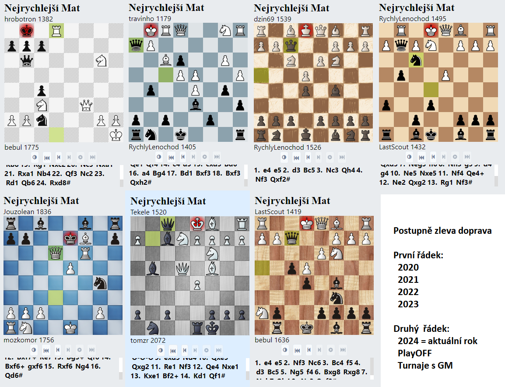

Turnaj stolet칤, kter칳 pro n치s, Monday Figh콘치ky, zorganizoval PeinSamaCZe, se odehr치l tuto ned캩li v pra쬽k칳ch Hole코ovic칤ch...
Dne 4.8.2024 se uskute캜nil kone캜n캩 n치코 prvn칤 re치l turnaj v 코achu,kter칳 byl z치rove켿 FIDE hodnocen칳.
Turnaje se z칰캜astnilo 11 hr치캜콢 Monday fights, tak칠 n캩kolik hr치캜콢 z okol칤 PeinSamaCZe v캜etn캩 jednoho n치hodn캩
z칰캜astn캩n칠ho pol치ka. Turnaj byl siln캩 nabu코en칳 hv캩zdami. Vedle na코eho Tomzra, Dj. St콏elce, Bukowskice byli
na stratovn칤 listin캩 tak칠 dva hr치캜i s ratingem p콏es 2100 FIDE elo.
Zleva: HonzaHonza, Lenochod, Baron Gorc, tomzr, Jouzolean, Mrazek, DJ-Pesec, Tekele, Scout a Bukowskic. Neve코li se PeinSamaCZe a Tomas_1989 s mim캜em.
Turnaj nebyl v콢bec komorn칤, u od za캜치tku panovala skv캩l치 n치lada a z hr치캜콢 bylo c칤tit nad코en칤 a z치rove켿
nervozita ze vz치jemn칠 rivality. PeinSamaCZe instaloval elektronick칠 boardy, kter칠 byly skv캩l칠 - zaznamen치valy
hry vyvolen칳ch na internet.
Jouzole치n proti Bukowskicovi
Baron Gorc s HonzaHonzaHonza
Bukowskic si u쮂셨al toho, co napekla Jouzova drah치 polovi캜ka a rozd치val 칰sm캩vy v코em z칰캜astn캩n칳m. Tomzr s ledov캩 klidn칳m v칳razem pochodoval po m칤stnosti
s my코lenkami na prvn칤 ob캩콘, Tekele 캜erstv캩 vst콏eb치val realitu po n치vratu z dovolen칠, Rychl칳 Lenochod m캩l zase zpo쬯캩n칤.
V z치kulis칤 se nesly informace o tom, 쬰 ho cht캩j칤 a 3 rivalov칠 zml치tit.
Tekele v hlubok칠m zadum치n칤
Rychly Lenochod v dobr칠m rozmaru
Dj-P캩코ec sed캩l zaduman캩 na stoli캜ce a p콏em칳코lel, co bude hr치t proti Jouzoleanovi - e4 nebo d4? Po zah치jen칤 jejich hry v코ak st치le nev캩d캩l. Mr치zek v o캜ek치v치n칤 p콏i코el pozlobit sv칠ho 코vagra a 코irok칠 okol칤, ale p콏edev코칤m aby si turnaj u쬴l. Povinnosti toti volaj칤 a kdo v칤, kdy p콏ijde p콏칤코t캩. Last Scout tvrdil Krist칳nce, 쬰 p콏ijde hned po turnaji dom콢 - lhal.
HonzaHonzaHonza p콏ijel a z Liberce a jako bonus se na n치s p콏i코el pod칤vat jeho bratranec Tom치코_1989 i s jeho prvorozen칳m synem. Bojovn칤k Baron Gorc nezklamal a p콏i코el tak칠 v o캜ek치v치n칤, 쬰 uhraje alespo켿 cenn칳 bod.
DJ-Pesec v rozst콏칤lenejch gat칤ch
Tomzr byl na bedn캩 hned dvakr치t!
Turnaj za캜al dopoledn칤m blitzem 3+2 o 11ti kolech, pak jsme dali ob캩d a pivo v nedalek칠 italsk칠 restauraci, n치sledn캩 jsme se p콏esunuli s lehk칳m zpo쬯캩n칤m k odpoledn칤m rapidu 11+0 o 9ti kolech. Turnaj celkem svi쬹캩 ods칳pal a cca v 18 hodin jsme byli u jeho konce. N치sledn캩 se ti nejodv치쬹캩j코칤 z n치s p콏esunuli do m칤stn칤 knajpy na pivo. Rychl칳 lenochod tam 캜elil bezprost콏edn칤mu 칰toku na jeho tkani캜ky od bot. O tom v치m ale bude pov칤dat a p콏칤코t캩.
Byl to skv캩l칳 den. D캩kuji v코em co p콏i코li a z치rove켿 douf치m, 쬰 turnaj nebyl posledn칤.
Gratuluji 칰sp캩코n칳m 游뗵 a PeinSamaCZe velik칠 d칤ky! -jouz-
Pozor, hl치코en칤 m칤stn칤ho rozhlasu!
Pozn: z치v캩re캜n칠 ohl칠dnut칤 za sez칩nou MF 2022 napsal slovutn칳 Jouzole치n u v prosinci. Zve콏ej켿ujeme pouze s m캩s칤캜n칤m zpo쬯캩n칤m... -beb-
Redakci se poda콏ilo dostat hlasov칳 z치znam z turnajov칳ch kl치n칤 mezi Jouzole치nem a Tekelem.
Konec sez칩ny vyvrcholil a m칳m zvykem b칳v치 napsat n캩co o prob캩hl칠m roce. Pro v코echny z n치s to byl rok r콢zn칳, bu캞 hektick칳 pln칳 zvrat콢 anebo nudnej, tak jako ten p콏ede코l칳.
P콏esto byl jeden okam쬴k v t칳dnu, kdy jsme na cel칳 ten shon 캜i neshon zapomn캩li a v캩novali se zcela smyslupln칠 캜innosti, kter치 rozv칤j칤 n치코 p콏irozen칳 talent,
pam캩콘 a p콏in치코칤 n치m a na코im drah칳m polovi캜k치m takovou radost. A n캩kdy i vztek.
Bylo to pond캩l칤, dvacet hodin, to zvon칤val n치코 캜as a odzn칤val pak jednadvacet t콏icet, jako by lusknut칤m prstu byla p콏edur캜ena n치lada na dal코칤 t칳den.
N캩kdo si to neodpustil ani jednou, nikdy nevynechali - jsou to kluci srdca콏i, hrdlo콏ezov칠 a koryfejov칠 turnaje, jist캩 si zaslou쮂 svoji t캩쬮e vyd콏enou plaketku.
Jsou to hr치캜i Jouzolean, Mr치zek, HonzaHonzaHonza a Last Scout. Nesm칤me zapomenout taky na Rychl칠ho Lenochoda, kter칳 p콏i코el o plaketku pouze z d콢vodu nemoci.
D캩kujeme v코em t캩mto dr쮂멺콢m.
Rozd칤ly mezi hr치캜i se postupn캩 nad치le zmen코uj칤, v코ichni aktivn칤 hr치캜i vykazuj칤 jednozna캜n칠 zn치mky zlep코en칤 hern칤ho stylu. Velmi pozvolna p콏ij칤m치me nov칠 hr치캜e, av코ak s dobrou rozvahou.
Letos se turnaje z칰캜astnilo 35 hr치캜콢, z toho sedm nov치캜k콢 a jeden GM Robert Cvek, kter칳 p콏isl칤bil 칰캜ast i v roce 2024.
P콏esn캩 po dal코칤ch 3204 MF hr치ch, tak jako ka쬯칳 rok, vyhla코uji slavnostn캩 v칳sledky.
1. Jouzole치n 366,5b.
Ji podruh칠 v 콏ad캩 ovl치dl Monday fight a to je코t캩 s v캩t코칤m n치skokem ne loni. V코ak taky celou dobu bojoval o poko콏en칤 rekordu Bukowskice z roku 2021 (371 bod콢), co se mu jen o vlas nepoda콏ilo. Radost z v칤t캩zstv칤 mu to v코ak nepokazilo. Zaslou쬴l si ho op캩t v칳bornou, 100% 칰캜ast칤 a p콏칤pravou proti jednotliv칳m hr치캜콢m, hern칤 styl p콏itom tento rok v칳razn캩 nem캩nil. Protihr치캜e d캩sil italskou a sicilskou hrou, ob캜as se vy쮂셨al v gambitech, kter칠 nejdou ani vyslovit. V dal코칤m roce mu i ostatn칤m p콏ibyde v칳razn치 konkurence, tak uvid칤me, jak se mu povede nad치le. Ka쬯op치dn캩 m치 strach, v tabulce posledn칤ch deseti turnaj콢 je moment치ln캩 a p치t칳 a v코ichni jsou tak dob콏칤游땶.
2. Mr치zek 339b.
Tak칠 op캩t uh치jil druhou pozici. V칳razn캩 se bodov캩 vy코vihnul, m캩l 100% 칰캜ast. Je to d콏칤캜, mak치 na sob캩 (z doslechu nov캩 i v posilce). Tento rok si na코el novou p콏칤telkyni - nejd콏칤ve jeho v칳konnostn칤 k콏ivka za캜ala prudce klesat, pak ale jako z치zrakem, pomalu a pozvolna za캜ala zase stoupat, a posledn칤 m캩s칤c hraje zase jako B콢h, a to vyvol치v치 pocity a nad캩je, 쬰 by snad p콏칤코t칤 rok mohl zabojovat rovnou o zlato?游땶 Za캜al hr치t n캩jek칳 prapodivnosti. Nikdo nev칤, co to znamen치. Jestli rezignoval na main lines, nebo jestli je v tom taktika, uvid칤me a v dal코칤 sez칩n캩. Ka쬯op치dn캩 u vznikaj칤 studie na vym칳cen칤 t캩chto jeho rozmar콢 a Mr치zek se bude potit 캜칤m d치l t칤m v칤c!游뱖
3. Bukowskic 295,5b.
Dal코칤 hr치캜, kter칳 uh치jil pozici z minul칠ho roku. Sta캜ilo mu k tomu je코t캩 m칠n캩 bod콢 a her ne loni. Av코ak absence nebyla zcela zdarma, n캩kolikr치t na n캩j cenil zuby n치코 Hans a hrozil jasn캩: Buki, jestli nep콏ijde코 i na V치noce, bude코 캜tvrtej! Buki je ale srdca콏 a p콏i코el. Moc se t캩코칤me na jeho nov칠 vyd치n칤 knihy M콢j syst칠m od A. Nimcovi캜e, na kter칠m st치le pracuje. Je코t캩 v칤c se t캩코칤me, a p콏칤코t칤 rok spadne do dal코칤ch nastra쬰nych past칤 u코it칳ch mu na m칤ru, nebo do t캩ch star칳ch - to m치me nejrad코i游때. Kvalita jeho hry je v코ak nepop칤rateln치 - jist캩 m치 velkou 코anci usp캩t v z치v캩re캜n칠m pavouku. Minul칳 rok prohr치l ve fin치le s Dj. P캩코cem t캩sn캩 3,5:2,5.
4. HonzaHonzaHonza, 289,5b.
Jeden z leto코n칤ch nov치캜k콢, z n캩ho m치me obzvl치코t캩 radost, proto쬰 m캩l tak칠 100% 칰캜ast! V kombinaci s jeho dobr칳m hern칤m v칳konem dos치hl skv캩l칠ho v칳sledku. Nejd콏칤ve za캜칤nal za 캜ern칠 Caro-Kannem, ale rychle zjistil 쬰 ho dus칤me, tak p콏e코el na Francii a te캞 캜ek치me, kdy ute캜e k n캩캜emu jin칠mu. Ale n캩jak se tam dr쮂 jako kl칤코t캩, proto do n캩j bu코칤me teorii co to d치 - a콘 se u캜칤, mlad칠j! Za b칤l칠 tvrd캩 br치zd칤 vody d치msk칠ho gambitu, 캜emu se ned치 nic vytknout, samoz콏ejm캩! Jen tak d치le, t콏eba to dal코칤 sez칩nu cinkne. Ostatn캩, co tomu chyb캩lo u letos 游땶.
5. RychlyLenochod, 201,5b.
Neust치le p콏ej칤쬯칤m o캜ima tabulku a nem콢쬿 uv캩콏it, 쬰 je p치tej. A s tak velk칳m po캜tem bod콢 - neuv캩콏iteln칠. Jeho dosud nejlep코칤 v칳sledek, zaslou쮂 velk칠 ovace. Dokonce z칤skal plaketku za nejvy코코칤 po캜et nejrychlej코칤ch mat콢 - konkr칠tn캩 12 - nikdo se mu ani nep콏ibl칤쬴l, na druh칠m m칤st캩 byl Bebul s 코esti nejrychlej코칤my maty. Nav칤c p콏idal zisk 15ti nejrychlej코칤ch her, co bylo tak칠 nejv칤ce. Tak jako minul칳 rok mu zkomplikovala 칰캜ast cesta do Francie, kde nakonec onemocn캩l. P콏esto se p콏i n치ro캜n칠 l칠캜b캩 za캜칤n치 pozvolna vracet k MF, u zase zve hr치캜e na berserk. Z leto코n칤ho z치v캩re캜n칠ho pavouka v코ak odstupuje kv콢li rekonvalescenci. V nov칠 sez칩n캩 se ur캜it캩 t캩코칤, a n치m to nap치l칤 lehkou, nebo klidn캩 t캩쬶ou figurou do kryt칠ho p캩코ce p콏ed kr치lem游땶. Opravdu hork칳 k콢켿 turnaje.
6. Mozkomor, 186b.
Letos pro쬴l m칤rn칳 pokles aktivity, p콏esto uh치jil solidn칤, 캜estnou pozici. Hr치캜, kter칳 je velmi 칰dern칳, hraj칤c칤 r치d ostr칠 pozice, s n칤m m치lo kdo chce p콏ij칤t do k콏칤쬶u. Rusk치 hra a kings gambit - "nic jin칠ho bych nehr치l, to je nuda..." Ka쬯ej to v칤, ale p콏esto mu to je코t캩 za cel칠 ty roky nikdo plnohodnotn캩 nevyvr치til, nebo jo? 游땶Letos se ne칰캜astn칤 z치v캩re캜n칠ho pavouka.
7. Margarita_Vlasenko, 182b.
Na코e mlad치 Rita ji plnohodnotn캩 zapadla mezi n치s a z칤skala si respekt mnoha hr치캜콢. Piln캩 tr칠nuje pod taktovkou nov칠ho tren칠ra, z 캜eho je ne ka쬯칳 nad코en. Hraje to dob콏e, holka na코e. T캩코칤m se na prvn칤 sez칩nu, kterou vyhraje. Ur캜it캩 se to jednou stane.
8. MichaelChmiel, 166b.
Dal코칤 z kvalitn칤ch nov치캜k콢 tohoto roku. V쬯y solidn캩 hraj칤c칤, ob치van칳 soupe콏 typick칳 t칤m, 쬰 m캩n칤 zah치jen칤 a je mu tak trochu jedno, kter칠 hraje. Jsem zv캩dav, zda-li to v dal코칤 sez칩n캩 trochu v칤ce ust치l칤. Kdyby i uhr치l v칤ce her, mohl by hrav캩 bojovat o nejp콏edn캩j코칤 m칤sta v tabulce.
9. Tekele, 159.5b.
M캩l jen o trochu m칠n캩 bod콢 ne loni a hned o dv캩 p콏칤캜ky zklesal jinoch, jen zplakal nad v칳d캩lkem. Posledn칤 코ance vkl치d치 do z치v캩re캜n칠ho pavouka, kde se hned v prvn칤 kole utk치 s Tomzrem.
10. Tomzr, 158b.
Dal코칤 nov치캜ek, mr치zk콢v 맜agr, kter칳 do MF nasko캜il a v p콢lce srpna. Od t칠 doby v코ak t칠m캩콏 nevynechal, n캩kolikr치t vyhr치l plaketku 100% v칤t캩zstv칤, p콏edv치d캩l nadpr콢m캩rn칠 v칳kony a stihl se tak vy코plhat a na des치t칠 m칤sto v tabulce. Je to velk칳 kandid치t na v칤t캩zstv칤 v z치v캩re캜n칠m pavouku i v dal코칤 sez칩n캩.
11. Bebul, 138b.
N치코 nejvy코코칤 admin letos v pond캩l칤 v 캜ase turnaje vede d캩tsk칠 lezeck칠 krou쬶y. Je to jeho v치코e켿 a tak si neum칤 pomoci. Na MF p콏ijde jen ob캜as ale o to v칤c se tam vy콏치d칤. Stejn캩 jako jeho bratr Mozkomor hraje nejrad캩ji Kings gambit, sv캩d캜칤 to o jeho charakteru - udern칳 mu s romantick칳m srdcem 游땶. Takt칠 p콏enech치 sv칠 캜estn칠 m칤sto v z치v캩re캜n칠mu pavouku hr치캜i um칤st캩n칠mu n칤쬰.
12. Last Scout, 137,5b.
Jako쬾o posledn칤 postupuj칤c칤 z na코ich jungen boys si zaslou쮂 velk칳 respect. Jeho 칰캜ast byla 100%, odehr치l rekordn칤ch 591 her, za캜칤nal z 칰pln칠 nuly a vypracoval se na obstojn칠ho hr치캜e. P콏i sou캜asn칠m tempu pokroku se m치me brzy na co t캩코it. U te캞 se st치v치, 쬰 plaketku za senzaci turnaje z칤sk치v치 pravideln캩 pr치v캩 tento hr치캜 - tento rok 25 kr치t - nejv칤ce.
Na 13. m칤st캩 se um칤stil v칳born캩 hraj칤c칤 nov치캜ek Tom치코_1989 (bratranec Hanse) a na 14. m칤st캩 Dj. P캩코ec, kter칠ho u v코ichni dob콏e moc zn치me游땙. Tito hr치캜i postupuj칤 do z치v캩re캜n칠ho pavouka m칤sto hr치캜e Mozkomor a Bebul, kte콏칤 odstoupili.
V코em gratuluji a p콏eji hodn캩 칰sp캩ch콢 v dal코칤 sez칩n캩, kr치sn칠 pro쬴t칤 zbytk콢 V치no캜n칤ch sv치tk콢 a v코e nejlep코칤 v Nov칠m roce 2024,
Za t칳m MF sepsal -jouz-
DJ-Strelec 캜aruje za Viktorii 콯i쬶ov
DJ-Strelec: Mus칤m se v치m pochlubit. Hr치l jsem v치쬹ou partii za Viktorii 콯i쬶ov, kde letos hostuju, a ud캩lal nejkr치sn캩j코칤 kombinaci ve sv칠m 쬴vot캩!
Po캜칤tal jsem to asi 10 minut a nakonec do toho cel칳 vyd캩코en칳, 쬰 jsem n캩co p콏ehl칠dl, 코el. Jxd5 a ob캩콘 d치my! -DJ‑Pesec-
Mraky nov칳ch 코achovnic
B칠bulka u nudilo po콏치d koukat na stejn칠 코achovnice na na코em WEBu, tak p콏idal p치r nov칳ch, v캜etn캩 figurek.
A kdy u je m치me, bude se pro ka쬯칳 rok, PlayOFF a turnaje s GM Robertem Cvekem, pou쮂셨at v쬯y jeden hlavn칤 set takto:

Krom toho je nyn칤 mo쬹칠 zobrazit libovolnou turnajovou partii tak, 쬰 v turnajov칠 tabulce
kliknete na hr치캜e a v zobrazen칠m seznamu jeho her zalevitujete my코칤 nad v칳sledkem.
P콏칤padn캩 na mobilu na v칳sledek kliknete a jak se V치s to zept치, jestli chcete p콏es browser nebo Lichess APP,
tak 콏eknete, 쬰 nechcete ani jedno a voil치, 코achovnice je na sv캩t캩.
Uk치zka v코ech parti칤 v칤t캩zn칠ho Tomzra v PlayOFF 2023. Gratulujeme! Nov캩 t칠 barevn캩 odli코eny vyhran칠 a prohran칠 partie. Video ukazuje prvotn칤 n치st콏el, kter칳 nejsp칤코 dozn치 zm캩n.
Proto쬰 m치m r치d gambity, bude pro gambity volena hez캜칤, 칰dern치, p콏ehledn치, n치dhern치 코achovnice.
Ale cha ch치치치, kdy hrajete za 캜ern칠ho a v n치zvu bude defense, zobraz칤 se takov치 코ed치 novin치콏sk치 nuda.
Ale i to m치 v칳jimky, Sicilka, n캩jak칠 gambity 캜ern칠ho typu Loty코치k, Rousseau, ... Za b칤l칠ho taky
Italka, Skotsk치, Anglick치, 맗an캩lsk치 atakd치le. Budu to roz코i콏ovat, kdy쬾ak m캩 bombardujte po쬬davky.
-beb-
Jouzole치n na hrad!
Pozn: z치v캩re캜n칠 ohl칠dnut칤 za sez칩nou MF 2022 napsal slovutn칳 Jouzole치n u v prosinci. Tou dobou se bl칤쬴ly prezidentsk칠 volby... Webmaster s p콏eklopen칤m na tyto str치nky zaspal, tak ten titulek te캞 vypad치 jako obsolentn칤, ale kdo by Jouzole치na na Hrad캩 necht캩l?
Hr치l se t칠 turnaj 코ampion콢, o kter칠m je v칤ce pojedn치no v archivu 2022. -beb-
A je to tu! Zase po roce m콢쬿 pron칠st - a je dobojov치no! A 쬰 to letos bylo ale drama. Ji t콏et칤ho ro캜n칤ku na코eho obl칤ben칠ho Monday Fights
se z칰캜astnilo rekordn칤ch 31 player콢, z toho 12 nov치캜k콢, kte콏칤 svedli hou쬰vnatou bitvu o 코achov칳 tr콢n. Na코e webov칠 str치nky jsou z치sluhou
na코eho B칠bulka v rozpuku - p콏ibylo tam stra코n캩 moc nov칳ch v캩c칤 - par치dn칤 fotky hr치캜콢 i speci치ln칤 helloweensk칠 karikatury,
aktu치ln칤 pavouk po ka쬯칠m turnaji, automatizace cel칠ho syst칠mu, roz코칤콏en칤 criss cross tabulky atd atd.
Pro velkou 캜asovou n치ro캜nost bohu쬰l nestihl dokon캜it v코e podle pl치nu, nap콏칤klad ji dlouho slibovanou S칤켿 sl치vy,
kde m치 b칳t vystaven sou캜et v코ech z칤skan칳ch plaketek a jednotliv칠 칰sp캩chy hr치캜콢, ale aspo켿 se na to v코echno mu쬰me t캩코it t콏eba v roce n치sleduj칤c칤m. Cht캩l bych mu za tu jeho pr치ci moc pod캩kovat, proto쬰 to d캩l치 na 칰kor jeho vlastn칤 rodiny a ned치 se to pova쬺vat za samoz콏ejmost, stoj칤 za t칤m spoustu pr치ce a sebeob캩tov치n칤. Bebule, velk칠 d칤ky.
Letos se n치m poda콏ilo do na코ich 콏ad nal치kat velmistra Roberta Cveka, kter칳 dokonce p콏isl칤bil, 쬰 se z칰캜astn칤 ka쬯칳 rok.
A v hled치캜ku m치me i dal코칤ho zn치m칠ho 코achistu - jeho jm칠no zat칤m nechci prozradit. Douf치m, 쬰 to klapne a letos budem hr치t hned s dv캩ma velmistry.
Jsme op캩t r치di, 쬰 jsme se se코li ka쬯칠 pond캩l칤 v roce a turnaj st치le 쬴je, ba dokonce rozkv칠t치. Douf치me p콏itom, 쬰 n치m to vydr쮂 co nejd칠le 游뗵.
U zanedlouho zde vyhl치s칤me instrukce k leto코n칤mu pavouku - turnaji 코ampion콢 2022 a taky p콏id치me nov칠 grafick칠 zn치zorn캩n칤 na코eho Family tree,
proto쬰 jsme se docela rozrostli - k nahl칠dnut칤 na webu v sekci Players.
Jak칠koliv n치pady, p콏ipom칤nky, nebo t콏eba 캜l치nky do sekce Hot news jsou v칤t치ny. Za ty je mimochodem st치le p콏isl칤bena plaketka Report칠ra 游뗵.
A nyn칤 k tradi캜n칤mu vyhl치코en칤 v칳sledk콢
1. Jouzole치n
Ano, je to tak. Asi nejv캩t코칤 p콏ekvapen칤 tohoto roku. Nikdo by tomu je코t캩 pred m캩s칤cem nev캩콏il, proto쬰 Bukowskicovy v칳kony byly t치k jednozna캜n칠.
On to ale dok치zal, vd캩캜칤 za to nejen m칤rn칠mu pokroku v jeho h콏e, ale hlavn캩 d칤ky aktivit캩 - hr치l i kdy se mu necht캩lo,
i kdy byl zrovna v pr치ci, i kdy byl nemocn칳, i kdy mu brat콏i mozkomorov칠 vyhro쬺vali krutou p콏칤pravou a pastmi z치ludn캩 nastra쬰n칳mi. Se ziskem 331 bod콢 (minul칳 rok 324,5 b.) sesadil mocn칠ho Bukowskice z tr콢nu a u se t캩코칤 na obhajobu titulu v p콏칤코t칤m roce.
2. Mr치zek
Hr치캜, kter칳 zahr치l ze v코ech nejv칤ce turnaj콢, nejv칤ce her, nasb칤ral 321 bod콢 (min. rok to bylo 264 bod콢 a tak se letos v칳razn캩 posunul). Takt칠 dok치zal udr쬰t slovutn칠ho Bukowskice za sv칳mi z치dy a byl tak po z치sluze odm캩n캩n st콏칤brem. Op캩t mus칤m zm칤nit jeho v칳razn칠 zlep코en칤 a hlavn캩 zrychlen칤 hry oproti minul칠mu roku. Tento rok opustil K Sm칤chov, dal se na dr치hu individu치ln칤 kari칠ry a 칰캜astn칤 se t캩ch nejpresti쬹캩j코칤ch turnaj콢 v 캛R. Nav칤c zjistil, 쬰 Jouzolean je jeho soused a tak s n칤m za캜al tr칠novat kombinace, z kter칳ch se V치m v p콏칤코t칤 sez칩n캩 zato캜칤 hlava. N치sleduj칤c칤 rok u bude jasn캩 bojovat o 코ampiona MF.
3. Bukowskic
Hr치캜 s nejv캩t코칤mi 코achov칳mi dovednostmi v MF kupodivu z콢stal a na 3. pozici se ziskem 313,5 bod콢. Minul칳 rok nahr치l 373 b., co mimochodem st치le z콢st치v치 dosavadn칤m rekordem. Osudn칳m se mu stala velk치 ne칰캜ast hlavn캩 v posledn칤m m캩s칤ci v roce, kdy ho p콏edb캩hl na 코anci 캜ekaj칤c칤 Jouzole치n a nakonec i maestro Mr치zek. Tento rok se chopil veden칤 Dob콏칤코sk칠ho 코achov칠ho klubu, kde jsou na n캩j mimojin칠 vyv칤jeny n치tlaky na zlep코en칤 jeho hry. Uvid칤me tedy, jak칠 plody mu to p콏inese - o캜ek치v치me, 쬰 vyst콏el칤 n캩kam do 코achov칠ho vesm칤ru. Nyn칤 m치 Mr. Bukowskic posledn칤 코anci zachr치nit si 캜est a zv칤t캩zit v turnaji 코ampion콢. P콏ejeme dvojn치sobn칠mu 코ampionovi hodn캩 코t캩st칤 a sil nejen v pavouku, ale i do dal코칤 sez칩ny.
4. Mozkomor
Cca 3/4 sez칩ny byl p치t칳, pak p콏idal na aktivit캩 a dohnal sv칠 dvoj캜e B칠bula. Nasb칤ral 264,5 bod콢 (min. r. to bylo pouze 190 bod콢) a st치le pat콏칤 mezi nejlep코칤 hr치캜e MF, kter칠mu se chcete v pavouku rozhodn캩 vyhnout. Snad nikdy nehr치l za bil칠 nic jin칠ho ne kr치lovsk칳 gambit - nezn치m 캜lov캩ka, kdo by mu rozum캩l v칤ce - v p치r variant치ch pod치v치 v칳kony i p콏es 2500 elo, proto je tak obt칤쬹칠 ho porazit. Postupn캩 m칳t칤 jednu odbo캜ku za druhou, trp캩liv캩 tr칠nuje a u jen vyhl칤쮂 elo 2000. 콯e by mu to p콏칤코t칤 sez칩nu kone캜n캩 cinklo? Rozhodn캩 si to zaslou쮂.
5. B칠bul
N치코 horkokrevn칳 k콢켿 turnaje nasb칤ral tento rok 219 bod콢, i tak to nesta캜ilo na mozkomora. Minul칳 rok nasb칤ral 209 bod콢, tak쬰 jde o dal코칤ho hr치캜e, kter칳 se posunul vp콏ed. Pro ty, kdo to je코t캩 nev칤, je Bebul Mistr p콏칤pravy. Za캜al hr치t z nuly proti 1.e4 odpov캩캞... e5! Postupn캩 vyvrac칤 v코em jejich obl칤ben치 zahajeni a mysl칤m, 쬰 to teprve za캜neme m칤t opravdu t캩쬶칠. Proto, 쬰 pavouk nen칤 jeho obl칤ben치 캜치st turnaje, rozhodl se bohu쬰l abdikovat na post postupuj칤c칤ho i p콏es obravskou nevoli a z치rmutek v srdc칤ch jeho spoluhr치캜콢, i p콏es tich칳 n치콏ek jeho squav, kr치sn칠 Nezn치m칠. Bude se tak rad캩ji pe캜liv캩 p콏ipravovat na n치sleduj칤c칤 sez칩nu, kter치 za캜칤n치 ji n치sleduj칤c칤 pond캩l칤. Jeho pozici v pavouku nahrad칤 Tom치코 Klimeck칳, kter칳 skon캜il 13.
6. Margarita Vlasenko
Na코e nov치 leto코n칤 캜lenka poch치z칤 z Ukrajiny, je j칤 12 let a do 캛eska j칤 vyhnala krut치 v치lka, kterou nikdo necht캩l a s kterou z치sadn캩 nesouhlas칤me. Moment치ln캩 쬴je u B칠bul치k콢. Navzdory jej칤mu v캩ku hraje 코achy profesion치ln캩 - ne jako my, 쬬ba콏i. A캜koli tato talentovan치 d칤vka za캜ala hr치t a 15.dubna, tak se velmi rychle vyhoupla mezi 12 postupuj칤c칤ch a zanedlouho u atakovala prvn칤ch 5.nejlep코칤ch hr치캜콢. Uvid칤me, jak si bude v칠st dal코칤ch cel칳ch 12 m캩s칤c콢, ale 캜elo turnaje by se m캩lo m칤t rozhodn캩 na pozoru. Zaslou쬰n칠 6. m칤sto a skv캩l칳 v칳sledek - 186 bod콢! Jen tak d치le.
7. Tekele
Letos vybojoval 168 bod콢, pr치v캩 jemu Margarita uko콏istila jeho 코est칠 um칤st캩n칤 z minul칠ho roku, kdy z칤skal 180,5 b. a tak za쮂셨치 m칤rn칳 propad v칳konnosti. M치lokdo ov코em v칤, 쬰 Teke pracuje v nemocnici na JIP a tr치v칤 tam polovinu sv칠ho 쬴vota jen aby pom치hal ostatn칤m. K tomu si vzal na starost v칳uku student콢 na Univerzit캩 Karlov캩, za캜al s치m studovat na Univerzit캩 ve Zl칤n캩 ekonomii a management a do toho v코eho si na코el p콏칤telkyni kterou musel vz칤t na Zanzibar游때. Tedy asi pochop칤te, pro캜 jeho elo stagnuje. Je코t캩 je ale jedna v캩c, kterou nev칤te - Tekele m치 toti 코achov칳 potenci치l a um칤 p캩kn캩 nahl칠dnout pod hladinu. St콏ezte se ho, a bude m칤t na 코achy 캜as!
8. Rychl칳 Lenochod
Je zase o trochu rychlej코칤. Tentokr치t hr치l jako o 쬴vot a dokonce to v jednu chv칤li vypadalo, 쬰 nahraje nejv칤ce her ze v코ech, ale pak zase cestoval po Francii a polevil. P콏ece je to jenom Lenochod. 139 bod콢 oproti 130ti lo켿sk칳m nen칤 velk칳m pokrokem a tak z콢st치v치 stejn캩 jako minul칳 rok ve st콏edu tabulky. Je to hr치캜, kter칳 pouze hraje a nikdy se neu캜칤, nerad analyzuje svoje hry a je mu tu cel칠 tak trochu jedno. Je to jeho z치kladn칤 povahov치 vlastnost 游때. Stejn캩 ho m치me r치di a partie s n칤m jsou kolikr치t velmi ostr칠 a z치bavn칠 游뗵.
9. DJ P캩코ec
Skon캜il a dev치t칳 se 115,5 nahran칳mi body. To je sice o trochu v칤ce ne lo켿sk칳ch 96,5 b., av코ak o 2 p콏칤캜ky hor코칤. V pond캩l칤, v 캜as turnaje v캩t코inou pracuje, je to 쬿rnalista t캩lem i du코칤 a tak nem콢쬰 moc hr치t, tomu odpov칤d치 i jeho v칳sledek. Jinak je to ale velmi profesion치ln칤 hr치캜, elo m치 nejvy코코칤 z n치s a je to velk칳 kandid치t na v칤t캩zstv칤 v turnaji 코ampion콢. To se mu v코ak je코t캩 nikdy nepoda콏ilo - ji dvakr치t mu v칤t캩zstv칤 na posledn칤 chv칤li zcizil n치코 velik칳 Bukowskic, i kdy partie byly v쬯y velmi vyrovnan칠. Letos tedy smrd칤 ve vzduchu velmi dramatick치 bitva t캩chto dvou tit치n콢 o v칤t캩zstv칤. V코ichni si p콏ejeme aby s n치mi p콏칤코t칤 rok Dj. P캩코ec hr치l mnohem v칤ce ne doposud.
10. Pir치t 77
Jako쬾o n치코 dal코칤 nov칳 leto코n칤 캜len se k n치m p콏idal 7.칰nora jako kamar치d Tom치코e Klimeck칠ho a nahr치l 칰ctyhodn칳ch 114 bod콢. Na turnaji um칤 sepnout a pod치v치t kolikr치t a nadlidsk칠 v칳kony. Trapil n치s, tr치p칤 a ob치v치m se, 쬰 bude tr치pit i nad치le. Velk칳 fanou코ek kan치lu Robert a Petr 코achy je p콏esn칳 opak Rychl칠ho lenochoda - pe캜liv캩 analyzuje sv칠 hry a neust치le jde v칳konostn캩 nahoru. Jednou to bude velk칳 postrach MF.
11. D쬴n 77
Z malebn칠hoho m캩ste캜ka na Vala코sku, kter칳 m치 v l치sce trnkovou slivovici, si cel칳 rok p콏치l postup do pavouka. Minul칳 rok skon캜il a na 15. nepostupov칠 pozici, kdy nahr치l jen 13 bod콢. Letos tedy zabojoval, nakonec nasb칤ral 76,5 bod콢 a jeho p콏치n칤 se tak naplnilo. Jsme zv캩davi kam a se mu poda콏칤 v pavouku doj칤t.
12. Maurice Dodo
Bukowskic콢v padavan v sez칩n캩 2021 jen t캩sn캩 nepostoupil do pavouka. 2022 je tak rokem, kdy to prolomil. Nahr치l 68 bod콢 oproti 20,5 b. z min. r. P콏i v캩t코칤 aktivit캩 by to klidn캩 mohl dot치hnout v tabulce je코t캩 v칳코, kvality na to rozhodn캩 m치. Snad se nep콏id치 do Bukowskiceho 코koly 코achov칳ch 캜ar kouzel, to by n치m pak zbyly o캜i jen pro pl치캜, jak by n치s v코echny hrav캩 p콏ejel.
A co Hrobotron a Travinho?
D치le nesm칤m zapomenout na 2 캜leny, kte콏칤 byli v쬯y sou캜치st칤 turnaj콢 코ampion콢, ale byli sesazeni ani ne tak kv콢li sv칳m kvalit치m, ale hlavn캩 kv콢li nedostate캜n칠 칰캜asti. Jde o Hrobotrona a Travinha. Ho코i, snad se brzy vr치t칤te! V코ichni ostatn칤 tzv. pod 캜arou bojovali 캜estn캩 a hou쬰vnat캩. V캩zte, 쬰 t콏eba p콏칤코t칤 rok budu ps치t 캜l치nky zrovna o V치s.
D칤k v코em, hezk칳 zbytek sv치tk콢, 먠벼stn칳 Nov칳 rok a spoustu 코achov칳ch i ne코achov칳ch 칰sp캩chu do roku 2023 p콏eje za cel칳 t칳m MF
-jouz-
Report치 o Monday Fights na CNN Prima News
B칠bul: Z dne코n칤ho turnaje si v코ichni odnesli aspo켿 bod! Nezn치m칠-00 se poda콏il d치t par치dn칤 Anastazia mat Baronu Gorcovi a LastScout porazil Hrobotrona sice na 캜as v berserku, ale ve vyhran칠 pozici. Ob캩ma gratulujeme!
B칠bul: BaronGorc se po por치쬮e od Nezn치m칠 oklepal a odnesl si t콏i b치je캜n캩 tu캜n칠 body, rovn캩 velik치 gratulace!
B칠bul: Margarita dlouho vedla a chyb캩lo jen m치lo a v turnaji zv칤t캩zila. Nakonec se v코ak radoval halloweensk칳 ka코p치rek! Grats!
Jouzolean se tak po dvou kolech, kdy se s Mr치zkem ma캜kali na turnajov칠 druh칠 p콏칤캜ce od halloweensk칠 kost콏i캜ky lehce odrazil a sm캩je se z druh칠ho m칤sta. Asi nechce hr치t v osmifin치le s Margaritou, co ch치peme. To by se b치l ka쬯ej! T캩코칤me se na dal코칤 boj!
B칠bul: A Jouzolean sehr치l s Rychl칳m Lenochodem 130 tahovou v칤t캩znou bitvu, co je druh치 nejdel코칤 hra historie Monday Fight, pri캜em nejdel코칤 v칤t캩zn치.
B칠bul: A 쬰 n치코 B칠bulek dal Blackburnovskej mat, kterej u 칰pln캩 zapomn캩l, 쬰 existuje, toho jste si ur캜it캩 v코ichni v코imli. Zat칤m jen Mozkomorovi a nyn칤 B칠bulkovi se to v historii Monday Fights poda콏ilo. No, tak si t콏eba z치vi캞te, noo칩칩칩칩
B칠bul: A u jste se pod칤vali, jak칠 halloweensk칠 avatary m치 Arytmik, Travinho, Mr치zek a Robert Cvek?
s GM Robertem Cvekem
Dne코ek je pro Monday Fights sv치tek, neb n치s poctil svou n치v코t캩vou Velmistr Robert Cvek. Byl to fofr. Nikdo z n치s ho nenachytal na 코vestk치ch. Za n치v코t캩vu moc d캩kujeme a k v칤t캩zstv칤 gratulujeme.
Robert Cvek jako v칤t캩z turnaje ke 100 let Salo Flohra. I p콏es 칰캜ast Davida Navary turnaj zcela ovl치dli velmist콏i Novoborsk칠ho K, zleva Viktor L치zni캜ka, Robert Cvek a Zbyn캩k Hr치캜ek Z콏ejm캩 dobr칳 odd칤l.
B칠bul: Margarita dneska sice nejprve podlehla Jouzole치novi, ale pak mu to hezky vr치tila a nakonec z칤skala kov nejcenn캩j코칤! Velik치 gratulace!
Jouzolean: Jenom쬰 te캞 ale vede jouzolean - a je to jeho jedin치 코ance jak poprv칠 a naposledy vyhr치t sez칩nu MF. Ud캩l치 v코e pro to aby vyhr치l 游때
Jouzolean: Bukowskic je코t캩 jednou nep콏ijde a je ve v치쬹칳ch probl칠mech! 游때 Tento rok je to hodn캩 dramatick칠! 마nce m치 i Mrazek!
B칠bul: V tabulce doch치z칤 k vachrlat칳m posun콢m. Posun Jouzole치na na prvn칤 m칤sto m칤sto Bukowskice tak칠 znamen치, 쬰 se Bukowskic ocit치 ve stejn칠 osmifin치lov칠 skupin캩 pro PlayOFF jako DJ-Strelec. Ten v코ak m콢쬰 snadno p치rkr치t na Monday Fight p콏ij칤t a podle pot콏eby se posunout p콏ed PIRAT77 a zajistit si tak pozici ze druh칠 strany vy콏azovac칤ho pavouka, tak쬰 by se s Bukowskicem mohl p콏칤padn캩 potkat a ve fin치le!
B칠bul:"Napsat b치se켿 o Monday Fight, t콏ebas by si v코칤mala jen jedin칠ho hr치캜e,
t콏eba by si v코칤mala jen nejnepatrn캩j코칤ho 캜lov캩ka,
by znamenalo slou캜it v코echny hrdinsk칠 zp캩vy v jedinou epopej,
svrchovanou a kone캜nou. Monday Fight je chaos p콏elud콢, choutek
a poku코en칤, je to tav칤c칤 pec sn콢, brloh my코lenek, za n캩 se styd칤me;
je to zmaten치 sm캩sice klamn칳ch z치v캩r콢, je to bitevn칤 pole v치코n칤.
Pronikn캩te v pond캩ln칤ch hodin치ch zsinalou tv치콏칤 캜lov캩ka, kter칳 p콏em칤t치,
pod칤vejte se za ni, pohle캞te do t칠 du코e, pod칤vejte se do t칠
temnoty. Pod zevn칤m klidem jsou bitvy obr콢 jako u DJ-P캩코ce, jsou
tam shluky drak콢 a hyder a mra캜na p콏elud콢 jako u Bukowskice, jsou
tam vizion치콏sk칠 p콏칤zraky jako u Jouzole치na. Jak stra코liv칠 je nekone캜no,
kter칠 캜lov캩k nos칤 v sob캩 a podle n캩ho zoufale m캩콏칤 v콢li sv칠ho
mozku a skutky sv칠ho 쬴vota!" Viktor Hugo: B칤dn칤ci, kapitola Sv캩dom칤
Abych si 콏치dn캩 zaslou쬴l prvn칤 leto코n칤 report칠rskou plaketku, ukradl jsem DJ-Pescovi b캩hem partie kl칤캜 od
CNN Prima News a s pistol칤 v ruce donutil 코t치b nato캜it report치 o Monday Fights.
-beb-
Lo켿sk칳 Monday Fihgts PlayOFF naskladn캩n
Web nyn칤 um칤 na z치klad캩 seznamu parti칤 odehran칳ch v playOFF vygenerovat str치nku PlayOFF turnaje a ten zobrazuje
v 캜asov칠 ose mezi ostatn칤mi Monday Fights turnaji. Partie odehran칠 v turnaji lze vyhled치vat v search apod.
Po콏ad칤 v turnaji nutno br치t s rezervou. Stran toho, jak po캜칤tat po콏ad칤 t캩ch, co skon캜ili ve stejn칠 f치zy playOFF,
do코lo mezi n치mi k m칤rn칠 rozep콏i. M콢j p콢vodn칤 v칳po캜et preferoval v p콏칤pad캩 tie-breaku pou쬴t칤 uhran칠 performance.
DJ-Strelec s Jouzole치nem se v코ak p콏ikl치n칤 k pou쬴t칤 nasazen칤, tedy po콏ad칤 v ligov칠 tabulce na konci roku.
Oboje m치 svou logiku. Byl jsem p콏ehlasov치n.
Tato drobnost m캩n칤 po콏ad칤 na t콏et칤m a 캜tvrt칠m m칤st캩
a podobn캩 v칳razn캩 prom칤ch치v치 borce, kte콏칤 skon캜ili v osmifin치le, nap콏. m캩 to posouv치 o dv캩 m칤sta nahoru a RychlyLenochod
kon캜칤 a osm칳, zat칤mco podle performance by byl na p치t칠m m칤st캩! P콏ipome켿m캩 p콏i t칠to p콏칤le쬴tosti, 쬰 RychlyLenochod hned
na 칰vod turnaje dvakr치t naban캜il na코emu dvojn치sobn칠mu 코ampionovi Bukowskicovi. Nasazen v코ak byl a sedm칳...
Klikn캩te si na obr치zek. PlayOFF m치 schv치ln캩 pozad칤 trochu do modra.
Doporu캜uji si turnaj otev콏칤t a kliknout si na prvn칤 콏치dek s Bukowskicem. Je opravdu pozoruhodn칠, jak vstoupil do
turnaje hned dvojn치sobnou prohrou!
B캩hem PlayOFF turnaje 2022, pros칤m, pos칤lejte v쬯y do WhatsApp skupiny seznam odehran칳ch parti칤.
Z url partie na lichess sta캜칤 vz칤t ten posledn칤 identifik치tor na konci. Nebo prost캩 zkop칤rujte odkazy na v코echny hry,
kter칠 jste v duelu odehr치li.
Podobn캩 by bylo super, kdo jste hr치li prvn칤 PlayOFF 2020, kdybyste poslali takov칳 seznam odehran칳ch parti칤 z roku 2020.
D칤ky, -beb-
17. Zlat치 Praha Rapid Open 2022
L칠to je ji za n치mi, ale 코achist칠 nelen칤, poctiv캩 sv치 zah치jen칤 piluj칤 a proto je pot콏eba ov캩콏it teorii
v맗raxi. Jouzole치n i Tekele se b캩hem l칠ta z칰캜astnili turnaje 룈lat치 Praha Rapid Open.
Turnaj se konal v맊entru Prahy na Karl칤nsk칠m n치m캩st칤 v맗rostor치ch volno캜asov칠ho za콏칤zen칤
Karl칤nsk칠 spektrum. Z칰캜astnit se mohli registrovan칤 i neregistrovan칤 hr치캜i.
칔캜ast byla vskutku pestr치, od nezku코en칳ch amat칠r콢 jako pan칤 V치vrov치, p콏es Tekeleho a po GM,
jmenovit캩 J칤rovsk칳 Milo코, FIDE ELO 2501 (aktu치ln캩 28. nejsiln캩j코칤 캜esk칳 hr치캜!).
Pravidla turnaje: rapid 12 minut + 3 sekundy 룔nkr칤ment na 7 kol 코v칳carsk칳m syst칠mem.
Startovn칤 listina
P콏es ve코kerou neznalost profesion치ln칤ho z치zem칤 코achov칳ch turnaj콢 mus칤m 콏칤ct, 쬰 turnaj byl skv캩le organizov치n.
Registraci jsme provedli p콏edem p콏es internet i se zaplacen칤m a po p콏칤chodu jsme u jenom 캜ekali na rozlosov치n칤
prvn칤ho kola. Rozpis prvn칤ho kola byl vyv캩코en na v칤ce m칤stech a tak se v코ichni sout캩쮂셖칤 mohli vklidu a bez
캜ek치n칤 zorientovat v맚abulce, naj칤t si sv콢j st콢l a zjistit sv칠ho soupe콏e.
Po kr치tk칠m 칰vodn칤m slovu organiz치tor콢 jsme zasedli k맜ylosovan칠mu stolu a partie prvn칤ho kola se mohly rozehr치t.
O캜ek치v치n칤 byla velik치, nervozita tak칠. Ost콏e jsme se pustili do na코ich soupe콏콢 od prvn칤ho kola.
Vzhledem k맗콏칤hodn칠mu losu bylo prvn칤 kolo 칰sp캩코n칠 pro oba hr치캜e MF a odnesli jsme si zaslou쬰n칳 prvn칤 bod!
Druh칠 kolo Tekelemu nalosovalo soupe콏e sELEM tak콏ka 1900, kter칳 vytasil Francouzskou obranu.
Le캜 znal칳 z치klad콢 tohoto zahajen칤, nemohl se jinak ne porou캜et s맗rohrou a respektem k맙oupe콏i.
Jouzolean dostal ke stolu hr치캜e sELEM 1986. No, ode코el s맕epo콏칤zenou, ale hlavou vzty캜enou vzh콢ru!
Po kr치tk칠 pauze n치sledovalo kolo t콏et칤. Italsk치 hra p콏inesla dal코칤 bod pro Jouzoleana a mohl tedy zam칤콏it
v맗o콏ad칤 v칳코e. Tekele nyn칤 z치pasil p콏i Caro Kahnu. Zuby nehty dr쬰l vyrovnan칳 stav,
bohu쬰l v맒oncovce poho콏el a porou캜el se s맗rohrou.
Jouzolean hled치, vym칳코l칤...
Turnaj se p콏ehoupnul do sv칠 druh칠 poloviny a byla ji zn치t 칰nava 캜치sti z칰캜astn캩n칳ch, odhodl치n칤 ale z콢stalo.
캛tvrt칠 kolo si Tekele namazal soupe콏e na chleba, jak jinak ne sv칳m Sicilsk칳m drakem!
Op캩t velmi siln칳 soupe콏 vstoupil Jouzoleanovi do jeho snah ovl치dnout m칤stn칤 z치polen칤.
Svou antisicilskou hrou 칰to캜il, br치nil, 칰to캜il, uh칳bal, klamal t캩lem i blafoval,
ale k막od콢m to bohu쬰l nevedlo.
Na n캩kolik nejlep코칤ch stolech z치polili ti nejlep코칤 z맕ejlep코칤ch.
Elektronick칠 코achovnice umo쮄갎valy sledoval tyhle z치pasy online!
Elektronick칠 코achovnice
Kostel sv. Cyrila a Metod캩je
Turnaj pokra캜oval p치t칳m kolem. Pro t콏et칤 turnajov칳 bod si do코el Tekele zav콏enou sicilkou.
Nimzowitschovou hrou se sna쬴l urvat dal코칤 v칳hru Jouzolean, bohu쬰l neusp캩l.
만st칠 kolo vy코la Jouzoleanovi Anglick치 hra a t콏et칤 turnajov칳 bod byl jeho!
Tekele zvykl칳 d치t ka쬯칠 pond캩l칤 dva nebo t콏i maty bebulovi a j칤t sp치t u mlel z맗osledn칤ho.
P콏ece jen Rapid turnaj je na soust콏ed캩n칤 dost n치ro캜n칳, obzvl치코t캩 po no캜n칤!
Zkusil tedy sicilku proti hr치캜i s만lem 1852, ale narazil.
P콏ed sedm칳m z치v캩re캜n칳m kolem jsem u pomalu bilancovali a v캩콏ili v맗osledn칤 bod.
P콏es silnou 칰캜ast i hr치캜콢 ze zahrani캜칤 a pr콢m캩rn칳m FIDE elem turnaje 1582 jsme byli v칤cem칠n캩 spokojen칤
s맗r콢b캩hem. Ov코em 쬰, kdy se 캜lov캩k ohl칠dne, vid칤 chyby a mrz칤 ho ztracen칠 body.
Nicm칠n캩 jsme se nevzd치vali, ob캜erstvili se a vstoupili do posledn칤ho kola.
Tekele vypustil Sicilsk칠ho draka. Lep코칤 trailer na Hry o Tr콢ny si div치ci nemohli p콏치t.
칔tok st콏칤dal 칰tok, soupe콏 byl nerv칩zn칤, o코칤val se, potil se. Jak u to ale v맚omhle zah치jen칤 b칳v치,
mal치 nepozornost m콢쬰 st치t hr치캜e celou hru a tak se i stalo, k칳쬰n칳 캜tvrt칳 bod nep콏i코el.
Jouzolean 캜elil za b칤l칠 Philidorovi. Utk치n칤 se vyv칤jelo dob콏e. Soupe콏 byl zasko캜en.
I p콏es dostatek 캜asu a 룔nkr칤ment se hra dostala do slo쬴t칠 koncovky s맔inimem 캜asu pro oba hr치캜e.
V 캜asov칠m presu do코lo ke zmate캜n칠 situaci, najednou nikdo nev캩d캩l, jestli se t치hnulo dob콏e.
Velmi nerv칩zn칤 z치v캩r, oba hr치캜i se p콏eli a neb칳t p콏ihl칤쬰j칤c칤ch, do코lo by na krev!
V맕ep콏ehledn칠 pozici se nakonec oba hr치캜i dohodli na rem칤ze a zisku tedy alespo켿 췋 bodu.
Turnaj byl tedy po zhruba 6 hodin치ch z치polen칤 ukon캜en. V칤t캩zem turnaje s86 칰캜astn칤ky se stal hr치캜
zLoty코ska se ziskem 6 bod콢. Gratulace. Jouzolean vybojoval kr치sn칳ch 3,5 bodu a obsadil 44. m칤sto.
Na 55. m칤st캩 skon캜il Tekel se ziskem 3 bod콢. Oba jsme odch치zeli pln칤 dojm콢 dom콢 a sp콏치dali pl치ny
na dal코칤 turnaje. Jist캩 se brzy n캩jak칠ho z칰캜astn칤me! -tekele-
Nov칠 achievementy na sklad캩
Web nyn칤 detekuje hromadu nov칳ch v캩c칤. Projd캩me si je popo콏ad캩:
칔tok s ob캩t칤 st콏elce na rochovan칠ho kr치le um칤 ze v코ech hr치캜콢 Monday Fights pouze mozkomor a RychlyLenochod.
Na cel칠m turnaji usp캩l takov칳 칰tok z aktu치ln칤ch 5031 her 11x, pouze jednou na d치msk칠m k콏칤dle.
Z toho 5x vyhr치l mozkomor, 4x RychlyLenochod a pak u jen jednou Jouzolean a Arytmik.
Z hr치캜콢, kte콏칤 tomuto 칰toku podlehli jasn캩 v칠vod칤 bukowskic, kter칳 tomuto 칰toku podlehl 6x.
Ob캩tujte s bukim st콏elce na h6 a m치te ho!
P콏i t칠to p콏칤le쬴tosti, bych r치d zavzpom칤nal na na코i milovanou Nezn치m치-00,
kter치 v on칠 naprosto unik치tn칤 partii s na코칤m v캩hlasn칳m 코ampionem na코la v prohran칠 pozici Arabsk칳 mat -
partie k nalezen칤 v tomto turnaji.
U tohoto zn치m칠ho matu v캩쮂 kontroluji, 쬰 po odstran캩n칤 jezdce u mat nen칤.
U tohoto vz치cn칠ho matu mus칤 matovat st콏elec a druh칳 st콏elec i jeden z jezdc콢 b칳t pro mat nepostradateln칤!
Zahrnuje v코echny maty, v nich v칤t캩z neztratil ani p캩코ce, nato figuru. Nesm칤 se ale jednat o 코evcovsk칳 mat.
L칠gal콢v mat, neboli N치mo콏n칤 kadet. Dosud v jedin칠m, mozkomorov캩, proveden칤.
Obr치zek je코t캩 ukazuje, 쬰 ikonka pro 칰tok s ob캩t칤 d치my m치 novou podobu.
No tak co co co칩칩칩칩칩칩? U jste porazili bukowskice ob캩t칤 st콏elce na h6? 콯e n칠? No to je 코koda. Tak hur치 do toho!
-beb-
Slovo k Fair Play
Ned치vno jsem se jen tak mezi 콏e캜칤 dozv캩d캩l, 쬰 kdysi d치vno si pot콏eboval jeden z Monday Fighter콢 nutn캩 odsko캜it a p콏edal v hospod캩
svou 코achovnici jin칠mu hr치캜i, aby za n캩j p치r tah콢 odtahal. Jednalo se o partii, kde se v코ichni t콏i znali a protihr치캜i to pak hned 콏ekli,
zasm치li se atakd치l. Legrace.
Pros칤m V치s, n칠 v코ichni hr치캜i v tomto turnaji jsou takov칳mto legr치ck치m naklon캩ni a cht캩l bych 콏칤ci:
v 쮂멳n칠m p콏칤pad캩 nepodv치d캩jme! Ani kdy protihr치캜 ud캩l치 brut치ln칤 blunder a "zaslou쮂 si" u prohr치t!
Neberme radu od nikoho, vy쬰켿me i man쬰lku, kdyby n치m cht캩la radit p콏es rameno, nebo synek varoval, 쬰 m치me napadenou d치mu.
Literatura: 쮂멳n치 코achov치 literatura ani vlastn칤 v칳pisky Engine: b캩hem hry never ever K치mo코: nesm칤 ceknout ani nazna캜ovat, nejl칠pe a콘 nesleduje! K치va: povolena v jak칠mkoli mno쬽tv칤
Turnaj Monday Fight je specifick칳 v tom, 쬰 se navz치jem hern캩 dob콏e zn치me a je mo쬹칠 se na soupe콏e p콏ipravit. V takov칠m p콏칤pad캩 se m콢쬰 st치t, 쬰
na코e hra odpov칤d치 prvn칤ch, t콏eba 14 tah콢, h콏e velmistra. Zvl치코콘 od slab코칤ch hr치캜콢 to m콢쬰 b칳t velmi bolestiv칠, ale st치v치 se to.
P콏칤kladem budi n캩kolik m칳ch v칳her v Barmen defense proti Tekelovi, kde mi variantu a prvotn칤 f칤gl poradil Jouzolean a j치 Tekelovi n캩kolikr치t chytil d치mu.
Man쬰lka: "pozor, stoj칤 ti tam p캩코ec!" Milenka: "bacha, tv치 d치ma je v ohro쬰n칤!" Dcera: "sm칤 tv콢j st콏elec p콏epadnout d치mu?" K치mo코: "m캩l bys tu svou d치mu vym캩nit"
Kdysi si report칠콏i na chess24 dob칤rali tu코칤m Giri Anishe, co 콏칤k치 tomu, 쬰 mohl vyhr치t, kdyby zahr치l jistou variantu.
Giri se kr치tce zamyslel, zakroutil hlavou a 콏ekl, 쬰 m캩l teda velikou kliku, proto쬰 kdyby to n치hodou zahr치l, v코ichni by ho
museli podez콏칤vat z pou쬴t칤 enginu.
Jen쬰 engine v p콏칤prav캩 pou쮂셨at m콢쬰me, nenakukujeme-li do n캩j b캩hem vlastn칤 hry. Jak pak takovou mistrovskou hru odli코it od podv치d캩n칤?
J치 svou p콏칤pravu 캜치ste캜n캩 konzultuju s Jouzoleanem a mozkomorem, tak쬰 ti v캩d칤 캜asto dop콏edu, co se chyst치, p콏칤padn캩 - mozkomor - m치 k m칠
p콏칤prav캩 p콏칤stup. Tak쬰 p콏칤pravu na p콏칤padn캩 podez콏elou partii mohu prok치zat. Nelze to samoz콏ejm캩 vy쬬dovat, ale p콏ijde mi to ide치ln칤.
Fair play nade v코e!
Podobn캩 Jouzolean mi furt a po콏치d bombarduje WhatsApp, kdy dop콏edu prozrazuje, co chyst치 na n캩koho z V치s.
O to m치 pak v캩t코칤 radost, kdy to klapne! 맒oda jen, 쬰 kdy mi poradil 칰dajnou tutovku na Mr치zka v zah치jen칤, kter칠 jsem nikdy p콏edt칤m nehr치l,
rozhodl se Mr치zek hned zkraje zahr치t n캩co jin칠ho a p콏ede mnou st치la pozice, se kterou jsem si v콢bec nev캩d캩l rady.
D칤ky V치m v코em, 쬰 jsou kl치n칤 na Monday Fight tak z치bavn치 a pln치 p콏ekvapen칤.
Zapla콘 P치n B콢h, 쬰 v코ichni hrajeme poctiv캩.
P콏eji mnoho 칰sp캩ch콢 a cenn칳ch skalp콢 v dal코칤ch hr치ch!
-beb-
Jouzolean콢v dov캩tek
Kdy jsem moralizov치n칤 o Fair Play napsal, p콏i코lo mi to takov칳 divn칳 a dal jsem to rad코i posv캩tit na Monday Fights
velen칤 k Jouzoleanovi a DJ-Pescovi, aby za t칤m st치l cel칳 triumvir치t. Jouzolean pak nal칠hal, 쬰 je코t캩 mus칤m p콏idat str칳캜ka Sama,
aby bylo jasn칳, 쬰 partie pr콢b캩쬹캩 sledujeme :-)
Jak zn치mo s치m Jouzolean zn치 ka쬯ou novinku, kter치 se na 코achovnic칤ch v MF ud치la, jak si
ned치vno trefn캩 v코imnul maestro Mr치zek.
Tak t칤mto d캩l치me za onou, doufejme zbyte캜nou, malou pololetn칤 Fair Play upom칤nkou kone캜n캩 te캜ku.
-jouz-&-beb-
#jouzolean #anticheatcontrol #fritz #analyzis
마mpi칩ni dost치vaj칤 zabrat
V posledn칤 dob캩 se n치m na turnaji st치v치 takov칳m dobr칳m zvykem, 쬰 jindy neohro쬰n칤 tit치ni, koryfejov칠 turnaje,
dost치vaj칤 zabrat od hr치캜콢, kter칠 si d콏칤ve mazali na chleba. A k na코im u코칤m pak dolehnou slova d콏칤ve nesl칳chan치:
DJ-Strelec: "j치 si 콏칤kal, 쬰 na Mr치zka to bude sta캜it... Nav칤c ned캩lal velkou ro코치du, tak쬰 to m캩lo b칳t v pohod캩...
만l nahoru... Podobn캩 jako v코ichni... Je na 캜ase si p콏ipustit, 쬰 na MFA to u nejde jen tak odtahat a v such칠m triku vyhr치t 游땏"
A 쬰 nadpis hovo콏칤 v mno쬹칠m 캜칤sle. Poslechn캩me si, co uchu na코emu lahod칤 je코t캩 v칤ce:
Bukowskic: "Soust콏ed캩n칤 0 a vyklepne코 m캩 v berserku, co m캩 st치lo 2. flek, bezva."
Dodejme zde, 쬰 코lo zcela jist캩 o tuto partii, kterou B칠bul odehr치l v berserku podstatn캩 l칠pe, ne b칳v치 jeho standardem v norm치ln칤 hrac칤 dob캩.
To bude teprv b쬿nda, a n캩kdo z vrchnosti koup칤 코evcovsk칳 mat!
RychlyLenochod nikdy nesp칤!
T치치치치k쬰, kdy na코inec vzhl칤쮂 z hlubin ligov칠 tabulky k maz치k콢m sv치d캩j칤c칤m boj o prvn칤 m칤sto, poc칤t칤 p콏i pohledu na t콏et칤 sloupec drobnou satisfakci.
Jste na 캜ele, ale 쬰 to st치lo bod칤k콢, co칩칩칩칩칩칩? -beb-
Zdrav칤m V치s, Monday figh콘치ci,
nov치 sez칩na je rozjet치 ve velk칠m stylu, na 캜ele tabulky se to mele jako je코t캩 nikdy, p콏ibylo p치r nov칳ch perspektivn칤ch hr치캜콢,
Nezn치m치 u je taky zp캩t, ta mimojin칠 p콏iv치bila i Hrobotrona, kter칳 to letos bude m칤t k obhajob캩 lo켿sk칠ho postupu do pavouka obzvl치코t캩 n치ro캜n칠.
No a jak vlastn캩 bude ten leto코n칤 pavouk vypadat? Po dlouh칠 kmenov칠 debat캩 jsme se rozhodli pravidla definovat ji te캞 a d치le je nem캩nit.
Postupovat do pavouka bude nov캩 12 hr치캜콢. Ti budou n치sledovn캩 dle PO콎AD칈 v tabulce roz콏azeni do pavouka.
Bude to podobn칠 jako v hokeji.
Prvn칤 캜tve콏ice hr치캜콢 v tabulce se automaticky kvalifikuj칤 do 캜tvrtfin치le.
V osmifin치le pak na sebe naraz칤 hr치캜i
5.vs 12.
6.vs 11.
7.vs 10.
8.vs 9.
Ve 캜tvrtfin치le pak
1.vs 8./9.
2.vs 7./10
3.vs 6./11
4.vs 5./12.
Aktu치ln칤 podoba pavouka bude po ka쬯칠m turnaji k nahl칠dnut칤 na na코em webu.
D치le chyst치me:
Ocen캩n칤 Va코ich slovutn칳ch v칳kon콢 v podob캩 plaketek (ji brzy na webu)
Turnaj proti jin칳m t칳m콢m
V치ben칤 캜esk칳ch velmitr콢 do na코ich 콏ad :D
Za cel칳 t칳m MF p콏eji mnoho 코achov칳ch i ne코achov칳ch 칰sp캩ch콢.
-jouz-
Hraje코 pod psa!
...nebo nad o캜ek치v치n칤?
V leaderboardov칠 tabulce je k vid캩n칤 sloupec R, kter칳 po vybr치n칤 dod치 p콏ehled o pohybu
ratingu ka쬯칠ho hr치캜e b캩hem jednotliv칳ch turnaj콢. To je코t캩 ale mnoho ne콏칤k치 o tom, s k칳m hraju
h콢콏 ne by odpov칤dalo ratingov칠mu rozd칤lu nebo naopak l칠pe. R칳쬿ju, nebo krv치c칤m? Hraju pod psa
nebo nad pom캩ry? A pr치v캩 toto si lze nyn칤 prohl칠dnout v na코칤 Cross Table, pokud za코krtnete volbu pro
zobrazen칤 Ratingu.
D콢razn칠 varov치n칤: pokud zrovna nejste Tekele, nejsp칤코 v치m pohled na tabulku
p콏ikresl칤 vr치sky na 캜elo!
Tak kup콏칤kladu ji zm칤n캩n칳 st치le siln캩j코칤 Tekele nehor치zn캩 r칳쬿je skoro na v코ech. Pohle캞me na
tabulku zobrazuj칤c칤 cel칠 obdob칤 na코ich slavn칳ch Monday Fight turnaj콢. Autor t캩chto 콏치dk콢
na m캩m shodil 103 ratingov칳ch bod콢, kterou쬾o vr치sku mali캜ko vyva쬿je fakt, 쬰 maestro Mr치zek
klop칳tnul je코t캩 o bod h콢콏. Jouzolean s Tekelem vykrv치cel jen 84 bod콢, je to dareb치k, ale kam se hrabe
na berserkuj칤c칤 코elmu, Rychl칳ho Lenochoda, kter칳 Tekeleho dokonce o 16 bod칤k콢 obral!
P콏ipomenut칤: V cross tabulce nikdy nezobrazujeme noStart hry, kter칠 ov코em figuruj칤
v leaderboardov칠 tabulce, kde tedy m콢쬰te vid캩t mali캜ko odli코n치 souhrnn치 data.
Co vzk치zat panu Tekelovi do budouc칤ch z칤t콏k콢? MENE TEKEL! -beb-
V칳ro캜n칤 zpr치va p치n캩 Jouzole치na
Tak a je dobojov치no! Sez칩na 2021 je s dne코n칤m turnajem definitivn캩 odp칤sk치na. Tato ji legend치rn칤 skupina hr치캜콢 se dok치zala sch치zet v men코칤m 캜i v캩t코칤m po캜tu
cel칳 rok a ani jednou se nestalo, 쬰 by se nehr치lo - a to ani tehdy, kdy jednou selhal lichess. To m치me 52 kvalitn칤ch turn치j콢 v roce. N치코 seznam hr치캜콢 ji 캜칤t치 26 jmen v캜etn캩 jedn칠 holky
a v코ichni se zn치me, dokonce na platform캩 lichess vznikl n치코 nov칳 klub, na kter칳 jsme n치le쬴t캩 hrd칤 ! A JAK TO VLASTN캨 CEL칄 DOPADLO?
1. Kategorie - Bukowskic - op캩t prvn칤, nedosa쬴teln칳, bez covidu nep콏emo쬴teln칳. Letos se mu poda콏ilo piln캩 nasb칤rat 373 bod콢, co stanovujeme jako nov칳 dosavadn칤 rekord a zlat치 plaketa bude vystavena v s칤ni sl치vy. Tento rok se jen zlep코oval, p콏es치hl hranici 2000 elo a jeho pron치sledovatel칠 nedok치zali rozb칤t jeho syst칠m v칳stavby Philidorovy obrany, nepochodili ani se Sicilskou obranou a dokonce ani s hrami d치msk칳m p캩코cem. T칤m akor치t v jejich t치bo콏e vyvolal dal코칤 vlnu nerovozity a odporu - my budeme bojovat d치l a p콏칤코t칤 rok ti to spo캜칤t치me, mocn칳 Bukowskici.
2. Kategorie - v코ichni ostatn칤:
Na 2.m칤st캩 se um칤stil Jouzolean - ani on nelenivil a zvedal sv칠 elo, potr치pil nejednoho mondayfightistu a obh치jil sv칠 2.m칤sto z minul칠ho roku. Na코el kone캜n캩 recept na kings gambit a mo쬹치 taky na kings indian, 캜칤m znejistil hlavn캩 bratry mozkomory. 324,5 bodu je v칳sledkem nejen jeho zarputil칠ho a ostr칠ho stylu, ale taky hlavn캩 d칤ky t칠m캩콏 100 % 칰캜asti. V칤ce ne 300 bod콢 se u nepoda콏ilo nikomu nasb칤rat. Ud캩lujeme mu tedy st콏칤brnou plaketu a bude vystavena v s칤n칤 sl치vy. Tuto plaketu z칤sk치 ka쬯칳 dal코칤 hr치캜, kter칳 poko콏칤 v p콏칤코t칤ch letech tuto mez.
Na 3. m칤st캩 se um칤stil Mr치zek - minul칳 rok byl osm칳, letos zabojoval a zaslou쬰n캩 bere BRONZ se ziskem 264 bod콢. Jeho rozv치쬹칠, 캜as vy쬬duj칤c칤 tahy znerv칩z켿ovaly snad ka쬯칠ho. Tento z치vodn캩 hraj칤c칤 player se tak칠 zlep코il, p콏ekro캜il hranici 1800 elo a v dal코칤m roce bude hork칳m kandid치tem na v칤t캩zstv칤. Bude muset p콏ekonat svou paniku s blitze, uklidnit sv칠ho hork칠ho ducha a pak dok치쬰 v코echno.
4. bramborov칳 flek uh치jil s velkou pohodou Bebul, kter칳 nasb칤ral 209 bod콢. Nev칤me, zda je spokojen칳, ale mysl칤me si, 쬰 ne. Jeho kvality tento rok 코ly nahoru, pak dol콢 a pak zase nahoru a na konci roku zase dol콢. Hr치캜 takov칠 kvality ale rozhodn캩 pot콏ebuje kov ! Tak snad p콏칤코t칤 rok. Jeho rivalita s tekelem graduje, nov칤 hr치캜i jsou tak칠 kvalitn칤, bude to m칤t zase trochu t캩쮄뫆 - ale j치 mu v캩콏칤m - p콏칤코t칤 prosinec - 2000 elo.
5. m칤sto bere nakonec Mozkomor, stejn캩 jako minul칳 rok, tentokr치t se 190 body. V코ichni dob콏e v칤, 쬰 by si taky zaslou쬴l bednu, ale jeho tak trochu hor코칤 칰캜ast mu to kaz칤. Ale mu to nevad칤, on se usm칤v치, on v칤, 쬰 n치s poraz칤 jak maliny - je to skromn칳 jinoch.
6. m칤sto pat콏칤 maestru Tekel칠mu - sv칳m urputn칳m zlep코en칤m mu n치le쮂 bronzov치 plaketa SKOKAN ROKU - hr치캜 ji m콢쬰 z칤skat jen jednou a bude vystavena v s칤ni sl치vy. Nejprve byl na 칰rovni mloka - minulou sezonu dev치t칳, t캩쬶op치dn캩 hraj칤c칤, nev칳razn칳 hr치캜. Pak ale za캜al tr칠novat, zlep코ovat se a d콏칤t na sob캩, a se z n캩j nakonec stal postrach pro cel칳 turnaj. Elo kolem 1700, nasb칤ral skv캩l칳ch 180,5 bod콢 a o p칤캞 nesta캜il na sv칠ho soka Mozkomora. Bojme se v코ichni !
7. m칤sto bere se ziskem 130. bod콢 Rychl칳 Lenochod - tolik bod콢 nasb칤ral i p콏es jeho cesty po Francii a i p콏esto, 쬰 v콢bec netr칠noval. Je to prost캩 haluz치k. Ale spoustu hr치캜콢 k n캩mu chov치 tajn칳 respekt. Jeho nepravideln치 zah치jen칤 dok치쬺u na코tvat ka쬯칠ho prof칤ka a ob캩ti lehk칳ch a n캩kdy i t캩쬶칳ch figur mu tak칠 nejsou ciz칤. Kdy to zkombinuje s berserkem, no pot캩코.
8. m칤sto obsadil Dj-P캩코ec s 96,5 body. To je absolutn캩 nejhor코칤 propad v d캩jin치ch Monday fights. Na tak kvalitn칤ho hr치캜e jist캩 p콏ipadaj칤 p콏edn칤 p콏칤캜ky, svou hroznou 칰캜ast칤 je a osm칳. Jist캩 toho bude ve sv칠m 코achov칠m d콢chodu litovat. Snad bude m칤t v칤ce 코t캩st칤 v pavouku, co je jeho posledn칤 eso v ruk치vu.
9.m칤sto je Travinhovo. Prvn칤 p콢lrok hr치l jako o 쬴vot a druhou p콢li nem캩l 캜as. Tak칠 adept na vy코코칤 pozice, jen hr치t, jen hr치t. 45,5 bodu jist캩 nen칤 코patn칠. Posun o jednu pozici z lo켿ska nelze tak칠 opominout.
Kone캜n캩 posledn칤 postupov치 pozice do pavouka - 10.m칤sto, n치le쮂 Hrobotronovi, kter칳 se p콏es 칰vodn칤 neshody s hr치캜칤 vlastn칤ch 콏ad nakonec umoud콏il, zabjoval a se ziskem 40,5 bodu se za콏adil jako posledn칤 postupuj칤c칤 do pavouka. P콏ipom칤n치m, 쬰 minul칳 rok byl a 11-t칳 a nepostoupil. Tak쬰 grats Hrobotrone a u쬴j si pavouka, douf치me 쬰 dojde코 co nejd치le !
V코em d캩kujeme za 칰캜ast, i t캩m nepostupuj칤c칤m, mezi kter칠 pat콏칤 hr치캜i m치lo aktivn칤, nebo hr치캜i ned치vno p콏idan칤. V캩콏칤me, 쬰 v dal코칤 sez칩n캩 uk치쬰te, co ve v치s opravdu je:)
Nyn칤 k pavouku :
Minul칳 rok vznikaly celkem zbyte캜n칠 rozep콏e ohledn캩 nasazen칤 jednotliv칳ch hr치캜콢 do pavouka. Tentokr치t, po mohutn칠 debat캩 kmenov칠 rady jsme se kone캜n캩 shodli a rozhodli takto:
Prvn칤 nasazen칳 do turnaje bude Bukowskic, jako쬾o B콢h a v칤t캩z minul칠ho ro캜n칤ku, pak za n캩j budou za콏azen칤 ostatn칤 hr치캜i fin치lov칠 des칤tky a to podle PERFORMANCE (tzn. pr콢m캩rn칠 v칳konostn칤 elo z jednotliv칳ch turnaj콢). D치le pak budou hr치캜i dosazen칤 do pavouka podle stejn캩ho kl칤캜e jako byl minul칳 rok. Pravidla z콢st치vaj칤 stejn치 a jsou k dispozici k nahl칠dnut칤 v grafick칠m zn치zorn캩n칤 pavouka pod textem. Jednotliv칤 hr치캜i se mezi sebou m콢쬺u kdykoliv za캜칤t domlouvat, pot칠 ozn치m칤 ve whats app s dostate캜n칳m p콏edstihem datum a hodinu boje. Ostatn칤 pak m콢쬺u z치pas sledovat. Soub캩쬹캩 s pavoukem se pak hned dal코칤 pond캩l칤 rozj칤쬯칤 nov치 sez칩na.
Tak good luck a d캩kujeme za p콏칤ze켿. (Zde k vid캩tn칤 odehran칠 PlayOFF.)
Za t칳m Monday Fights
-jouz-
Necho캞te k Tekelemu na kafe!
Do na코칤 redakce dorazila st칤쬹ost zhrzen칠ho kafa콏e Jouzole치na, jeho ho콏ekov치n칤 publikujeme v nezm캩n캩n칠m pod치n칤...
Tekeleho 코achov칳 캜urbes
"V캜era jsem byl u Tekeleho na kafe - v코ude 코achov칠 knihy, figurky po zemi, 3 코achovnice r콢zn칠 po byt캩, ventil치tor u PC 콏val
jak na lesy, proto쬰 procesor zrovna po캜칤tal n캩jakou stra코n캩 divnou pozici z V칤de켿sk칠 hry. Tekele 콏ek jen pojd hr치t,
ani to kafe mi neuva콏il a odch치zel jsem nasranej s v칳sledkem 3:3!!
A to jsem se potil a modlil abych posledn칤 hru vyrovnal!!" -jouz-
M치me vlastn칤 klub!
Jednoho 칰tern칤ho ve캜era napsal Jouzolean "zdrav칤m", co norm치ln캩 ned캩l치, tak쬰 bylo jasn칳, 쬰 je za t칤m n캩jak칳 hlub코칤 d콢vod.
A za tou svou zdravic칤 dodal "vytvo콏il jsem na lichess n치코 vlastn칤 klub."
Takhle stru캜n캩, takhle jasn캩, takhle 칰dern캩 to napsal.
A potom v klubu co chv칤li 코up! - p콏ibyl dal코칤 Monday-Fightista! A 쬰 se do seznamu vyklubyla i Nezn치m치-00, d치 se 콏칤ct, 쬰 se m콢쬰me
t캩코it na sv캩tl칠 z칤t콏ky.
Jouzolean pak v t캩코en칤 pokra캜oval: "M콢쬰m si tak n캩kdy zahr치t n캩jak칳 t칳mov칳 turnaj, je tam diskuzn칤 f칩rum a je to cool."
Tak hur치 hur치! St콏ezte se n치s ciz칤 klubov칠, my bijem o m콏칤, ducha lvi, a my v치s rozbijeme!
-beb-
Monday Fight na콏칤k치 i j치s치
Kdy u hraju 코achy 캜칤m d치l h콢콏 a sobotn칤 po캜as칤 se zrovna nep콏ekon치v치, naprogramoval jsem aspo켿 jednu lib콢stku,
kter치 jedn캩m p콏ikresl칤 vr치sky na 캜elo a pos칤l칤 bolest v srdci, zat칤mco druh칳m rozp치콏e hubu pro sm칤ch.
O캜 jde?
Tabulka po콏ad칤 v turnaji s na콏칤kavou 캜i j치savou zm캩nou Ratingu
Na Monday Fight je nyn칤 tabulka s kone캜n칳m po콏ad칤m v turnaji.
Podobn치 tabulka je k vid캩n칤 i na str치nce turnaje v Lichess, ale jen u n치s je u ka쬯칠ho hr치캜e zobrazen d콢vod k radosti 캜i pl치캜i.
Pokud jste n캩kdo moc neklikal na ty st콏elce pod tabulkou, v콏ele doporu캜uji! M콢쬰te si tak dohledat n캩jakou radost, pokud
m치te zrovna slzy pro pl치캜, a nebo, pokud v치코 rating zrovna stoup치 k nebi jako d칳m, nabrat pohledem na svou temnou historii t칠 trochu pokory.
A rychl칠 maty v쬯ycky pot캩코칤.
-beb-
Jag j치 to hraju!
Pond캩ln칤 Monday Fight zastihl na코eho B칠bulka
v bojovn칠 n치lad캩. V코echny v치s m캩l na lopat캩! Ale ta lopata byla n캩jak치 d캩rav치, tak mu v칤t캩zstv칤 v쬯ycky n캩jak
lopatou propadlo, a nejen v칤t캩zstv칤, ale i p콏칤padn치 rem칤za. T칤m se n치코 B칠bulek li코칤 od takov칠ho Alireza Firouzji,
kter칠mu se na turnaji Grand Swiss
da콏칤, ale v partii se Shirovem u st치l +2.75, cht캩lo by se 콏칤ci, m캩l ho na lopat캩, ale asi si ji p콢j캜il od B칠bulka
a v칤t캩zstv칤 mu propadlo. Na코t캩st칤, nepodoben B칠bulkovi, rem칤zu uml치t칤 i holejma rukama.
Firouzja m캩l Shirova na lopat캩
Daleko tvrd코칤 rem칤za ov코em potkala na코eho 캜칤m d치l lep코칤ho Tekeleho, kdy ve sv칠 par치dn칤 partii m캩l bukowskice na lopat캩 v bagru,
ale v koncovce kr치l, v캩 a st콏elec proti kr치li si nechal vz칤t tu v캩, co se nevid칤 ka쬯칳 den.
A tak si B칠bulek naordinoval studijn칤 klid a opustil do konce t칳dne aspo켿 tu WhatsApp skupinu,
aby zacelil d칤ry v t칠 lopat캩, na kter칠 v치s v코echny m캩l a aspo켿 trochu obrousil hrany sv칠 neschopnosti.
Toho bohd치 nebude, aby B칠bulek z boje ut칤kal. Podle m캩 za to m콢쬰 Nezn치m치-00, 쬰 nehr치la. To se v콢bec ned치 hr치t,
캜lov캩k po콏치d kouk치, p콏ihl치s칤 se je코t캩, nebo nep콏ihl치s칤...
-beb-
Jedna zn치m치 뢽EZN츼M츼
P칤코e se rok 2021, p콏esn캩 13.09. Den, kdy se vMonday Fights objevila prvn칤 쬰nsk치.
Jedna holka mo쬹치 s맗odobn칳m humorem jako Vy. Jedna holka mo쬹치 s맜elk칳mi ambicemi
jako Vy.
Nezn치m치-00, ilustra캜n칤 foto
Velk칠 d칤ky pat콏칤 Jouzole치novi, kter칳 ji p콏ivedl na novou cestu. Cestu t캩쬶ou, trnitou.
Cestu ㅁCHU. D칤ky za p콏ijet칤 a promi켿te mi mou troufalost za m콢j dne코n칤 prvn칤 POST. 콎칤kala
jsem si, 쬰 t칤mto zp콢sobem ud캩l치m prvn칤 krok k맕a코emu sezn치men칤. V코e bylo samoz콏ejm캩
konzultov치no sJouzole치nem, tak쬰 p콏칤padn칠 n치mitky sm캩콏ovat k맕캩mu :D.
T캩코칤m se na dal코칤 pond캩ln칤 setk치van칤.
P.S. Na tuto hru nikdy nezapomenu! -nezn-
Jak vypad치 blunder aneb chvilkov치 z치stava krevn칤ho ob캩hu
Na pond캩ln칤m kl치n칤 (6.9.) jsem se vzn치코el na vln캩 neporazitelnosti. A kdy si u 캜lov캩k o sob캩 za캜ne myslet p콏칤li코, zas치hne prst Bo쮂.
V utk치n칤 s panem hrobotronem 코lo s b칤l칳mi figurkami v코e hladce podle pl치nu, 캜asem jsem si vypracoval pohodlnou p콏evahu v podob캩 jedn칠 v캩쬰 a v코e sm캩콏ovalo k hladk칠 v칳h콏e v pr콢b캩hu n캩kolika tah콢.
Posledn칤 tah sm캩콏uj칤c칤 k MATU!? Hodiny b캩쮂 d치l, jak je to mo쬹칠? O캜i t캩kaj칤 po 코achovnici a j치 si pomalu za캜칤n치m uv캩domovat, co se stalo. Krevn칤 ob캩h se zastavuje
Pan hrobotron v치h치, tak칠 evidentn캩 netu코칤, pro캜 hodiny nestoj칤 a hra nekon캜칤. Nakonec d캩l치 ten jedin칳 mo쬹칳 tah v partii. Tohle nem콢쬿 vzd치t, i kdy bych si hned prohr치t zaslou쬴l. Za캜칤n치 marn치 snaha vyprovokovat hrobotrona k chyb캩 a napadnout mu v캩쮂 kr치le i d치mu sou캜asn캩. Za캜칤n치 hra ko캜ky s my코칤. Postupn캩 likviduji p캩코covou p콏evahu, ale v tuto chv칤li m캩 m콢쬰 hrobotron u jasn캩 dob칤t prostou prom캩nou p캩코ce h na d치mu:
Z nedostatku 캜asu v코ak vol칤 pouze uhybn칳 man칠vr d치mou na c4+ a situace se mot치 a k samotn칠mu z치v캩ru, kdy partii z치zra캜n캩 zremizujeme. Pou캜en칤 jsou dv캩:
I kdy m치코 obrovskou p콏evahu, partii vyhr치v치코 a ve chv칤li, kdy se ti zastav칤 hodiny
Bojovat mus칤코 a do posledn칤ho p캩cha 游땕
-buk-
Jak chutn치 v칳hra nad 코ampionem
J치 bych cht캩l nen치padn캩 upozornit na to, ne 쬰 bych se n캩jak chv치stal, ale 쬰 dnes bukowskic byl pr치v캩 jednou pora쬰n, jedn칤m hr치캜em,
kter칠ho nebudu jmenovat, aby to nevypadalo moc nabub콏ele. Takov치 v칳hra pak dok치쬰 p콏eb칤t i zklam치n칤 z vyhran칳ch parti칤 nedot치hnut칳ch kv콢li 캜asu 캜i ji
tradi캜n캩 prohran칳ch rem칤zov칳ch koncovek 游뗵 nehled캩 pak na vylo쬰n캩 jedovat칳 z치rmutek z 캜ist캩 prohran칳ch parti칤...
to v코echno ta jedna v칳hra dok치쬰 p콏eb칤t, takovou kouzelnou moc m치 jedna jedin치 v칳hra s bukowskicem. Doporu캜uju f코em co nejd콏칤ve vyzkou코et. Stoj칤 to za to 游뗵
-mraz-
Hork치 odveta v Barmen Defense
Dne코n칤 turnaj je specifick칳 v칳zvou mezi hr치캜i Bebul a Tekele. Chv치stali se p콏evelice v맕a코em chatu,
jac칤 jsou to odborn칤ci na Sicilian defence. Vsadili se, 쬰 kdo prohraje dne코n칤 duel v alapinovi,
nap칤코e dal코칤 캜l치nek do MF. Jsem opravdu velmi zv캩dav, jak to dopadne.
Vyu쬴ji t칠to p콏칤le쬴tosti a pokus칤m se jejich hru okomentovat a zanechat TU tak alespo켿 n캩jak칳 v칳ukov칳 materi치l.
Bebule ani nev칤코, jak se t캩코칤m na dal코칤ho alapina.
Dostane코 takovou 캜o캜ku, 쬰 za캜ne코 hr치t pi코kvorky 游때
Cen캩n칤 zub콢 p치n캩 Tekeleho, 10.8 na WhatsApp
Tekele urputn캩 tr칠noval, aby slovutn칠ho B칠bula porazil a znemo쬹il, odborn캩 konzultoval sJouzole치nem
sc칠n치콏 mo쬹칠ho v칳voje partie, byl varov치n a d콢razn캩 pou캜en o n치strah치ch a 칰skal칤ch tohoto zah치jen칤.
B칠bulova p콏칤prava je nejasn치. Poj캞me se tedy pod칤vat, jak partie dopadly. Nakonec se odehr치ly dv캩.
Okomentuji hry jen do f치ze, kdy bylo rozhodnuto. -jouz-
캛ty콏i byteln칳 kola,...
Na druh칠m srpnov칠m turnaji hr치li B칠bul s Bukowskicem hezky od oh칳nku, B칠bulovy uma코t캩n칠 prsty po displeji klouzaly,
nebo se naopak ne a ne odlepit, a tak nen칤 divu, 쬰 s Jouzoelenem padnul na 캜as i v naprosto vyhran칠 pozici.
B칠bulek a Bukowskic
Nev칤m, jak to maj칤 ostatn칤, ale B칠bulk콢v WhatsApp se ob캜as nat캩코en캩 rozblik치, poct캩n n캩jakou Jouzoleanovou 코achuchtivou notickou,
typu "B칠bule, zn치코 tuhle l칠캜ku v Alapinovi?". Ned치vno si B칠bulek na tuhle l칠캜ku vzpomn캩l a Jouzoelan ji mezit칤m zapomn캩l,
ale kdy do코lo na l치m치n칤 chleba, vzpomn캩l si a o d치mu nep콏i코el. T치치치치k쬰 pech hroznej, 치치치치le, posledn칤 turnaj si B칠bulek spravil chu콘, a to tak, 쬰 po콏치dn캩, v칤te?
P콏i pohledu na partie odehran칠 na tomto turnaji si pozorn칳 캜ten치콏 v코imne, 쬰 prvn칤 캜ty콏i nejkrat코칤 partie, z nich t콏i skon캜ily matem,
vyhr치l v코echny n치코 B칠bulek.
A to ve 캜ty콏ech r콢zn칳ch zah치jen칤ch! V칤te? Ta jeho variabilita! Ta jeho p콏ipravenost! Ta jeho nekompromisnost! Ta jeho nezlomn치 touha v코echny porazit!
Nezb칳v치 n치m, ne mu pogratulovat, mohutn칳mi zdravicemi na코imi.
Jin치캜 to te캞 Bukowskic trochu fl치k치, zd치 se mi, t치치치k쬰 se na n캩j slovutn칳 Jouzolean mohutn칳mi kroky sv칳mi dotahuje a co nevid캩t
se m콢쬰me t캩코it na zm캩nu na 코pici. To je n캩co jako p콏e코roubovat na v치no캜n칤m strome캜ku V치no캜n칤 hv캩zdu na, j치 nev칤m, turbo nebo defibril치tor.
-beb-
Tekeleho apr칤lov칠 ohl칠dnut칤 za Monday Fight
Op캩t se n치m se코el t칳den s t칳dnem a v코ichni amat칠콏i i zap치len칤 hr치캜i bu코칤c칤 sv칠 strategie do 40. tahu, fanou코ci offline souboj콢 trp칤c칤
alergi칤 na vitamin D, div치c칤 prahnouc칤 po nevyzpytateln칳ch souboj칤ch 캜ern칳ch s b칤l칳mi (ultrakorektn칤 zde nepochod칤), fotbalov칤 aj. hooligans,
ji si pravideln칠 pra쬽k칠 derby dvou S vynahrazuj칤 p콏i nyn캩j코칤 covidov칠 sez칩n캩 s치zen칤m na pr콢b캩h a hlavn캩 v칳sledky turnaje Monday Fight,
ale i nasran칠 man쬰lky, zv캩dav칠 p콏칤telkyn캩 i zpruzel칤 kolegov칠 v pr치ci, se kone캜n캩 do캜kali.
Posledn칤 dubnov칳 turnaj prob캩hl v hojn칠 칰캜asti, celkov칳 po캜et 11 z칰캜astn캩n칳ch hr치캜콢 n치m m콢쬰 z치vid캩t ledajak칳 okresn칤 코achov칳 klub.
Ten ve Vala코sk칳ch Klobouk치ch ur캜it캩. A rozhodn캩 tam nemaj칤 tak 코칤len칠 plejery. Respektive kdyby je m캩li, hraj칤 s n치mi Monday Fight,
to d치 rozum. V코ak proto je Jouzole치n v Praze. N캩co jako na코칤 hokejisti. Kdo um칤, hraje NHL, zbytek se nech치 p콏eblafnout J치grem v II. Lize.
P콏i psan칤 t캩chto 콏치dk콢 si 콏칤k치m, zda-li zmi켿ovat Bukowskice. Aktu치ln칤 sez칩na se n치m p콏et치캜칤 do druh칠 t콏etiny a nezd치 se, 쬰 by zrovna on m캩l
zpomalovat ve sb칤r치n칤 bod콢. Pomineme-li jednu ne칰캜ast, bere v쬯y nejh콢콏e t콏et칤 m칤sto. Co o to, rozhoduj칤 body. T캩ch m치 144,5 a bude jistojist캩
vstupovat do z치v캩re캜n칠ho turnaje z prvn칤ho m칤sta. Zbytek sez칩ny z콏ejm캩 rozhodne jeho p콏칤padn치 칰캜ast na 코achov칠m soust콏ed캩n칤 v Banglad칠코i,
kam je srde캜n캩 zv치n a hr치캜i Monday Fight se skl치daj칤 na letenku. Btw p콢l roku bez internetu a pitn칠 vody bude muset n캩jak vydr쬰t.
P콏i t칠hle p콏칤le쬴tosti nelze nezm칤nit pond캩ln칤 senza캜n칤 por치쬶u Bukowskice s Rychl칳m Lenochodem, kter칳 se pr치v캩 z onoho soust콏ed캩n칤 vr치til.
I kdy, p콏i Rusk칠 h콏e bych tipoval sp칤코e 칰캜ast na turnaji v KLDR, ale to se mus칤 vyj치d콏it Rychl칳 Lenochod.
P콏i pond캩ln칤m turnaji doplnil Bukowskice na pomysln칠m piedestalu Bebul. Hr치캜, jeho v칳sledky chronicky sr치쮂 코patn칠 losov치n칤 turnaje,
p콏ipraven칤 soupe콏i, ignor p콏칤mo z veden칤 Lichess.org 캜i glob치ln칤 oteplov치n칤, se nyn칤 bl칳sknul druh칳m m칤stem! P콏es dvojitou por치쬶u
s Bukowskicem za 캜ern칠 si s p콏ehledem do코el pro druh칠 m칤sto.
T콏et칤 dekorovan칳 Mozkomor se 17 body jistil t콏et칤 m칤sto. Spousta ztracen칳ch her s pap칤rov캩 slab코칤mi hr치캜i ho st치lo spoustu bod콢.
Uvid칤me, jak se to prom칤tne v z치v캩ru sez칩ny. Aktu치ln캩 dr쮂 Mozkomor p치t칠 m칤sto. 콎ekl bych TOP 5, ale v z치v캩su se nach치z칤 DJ-P캩코ec
h콏e코칤c칤 na sv칠 ne칰캜asti. Vzd치v치 u tuhle sez칩nu? Nemysl칤m si, naposledy postoval fotky z Ulamb치t치ru.
Z콏ejm캩 n캩jak칠 soust콏ed캩n칤, uvid칤me, jak se prom칤tne ve zbytku sez칩ny.
Z치v캩rem bych r치d p콏ednesl n캩jak치 pozitiva pro ostatn칤 nezm칤n캩n칠 hr치캜e. Zn치te term칤n 뤤쪈lezn치 Sparta? Jestli tak칠 t치pete, uklidn칤m v치s.
U to nic neznamen치. N캩co jako ICQ. Pouze nostalgie. Pro캜 to zmi켿uju? V n치sleduj칤c칤 tabulce uvid칤te progres za posledn칤 rok, zdroj Lichess.org.
April 2020
April 2021
Bukowskic
1950
2020
Jouzole치n
1700
1750
Mr치zek
1500
1650
B칠bul
1650
1700
Mozkomor
1650
1650
Tekele
800
1350
DJ-P캩코ec
1850
2050
Travinho
1100
1350
Arytmik
1300
1350
Rychl칳 Lenochod
1350
1430
Pointu v tabule a콘 si hled치 ka쬯칳 s치m. P콏eji V코em 코tastn칠 tahy do dal코칤ho turnaje!
-tekele-
Hork칠 aktuality Monday fights
Disclaimer: Provozovatel tohoto webu nenese 쮂멳nou odpov캩dnost za spr치vnost informac칤 obsa쬰n칳ch v n치sleduj칤c칤m 캜l치nku napsan칠m hork칳m perem p치n캩 Jouzole치na. :-D
Rychl칳 Lenochod p콏ed 캜asem ozn치mil, 쬰 se do kv캩tna nem콢쬰 칰캜astnit Monday fights (d치le jen MF) kv콢li nov칠 pr치ci. Sd캩lil tak칠, 쬰 bude ale piln캩 tr칠novat a od kv캩tna n치m za캜nou t캩쬶칠 캜asy. Co ale ne캜ekal bylo, 쬰 kdy u lenochod nejde na MF, p콏ijde MF za lenochodem v맗odob캩 Bullet Wednesday fight a p콏istihne ho op캩t nep콏ipraven칠ho. Se ziskem pouh칳ch 12 bod콢 se za콏adil na p콏ed-p콏edposledn칤 m칤sto a potvrdil tak svoji mizernou formu. Vzkaz pro n캩j - p콏ed n치mi neute캜e코 hochu - ani kdy jsi zBrna :D
Kdy zabrous칤me do minulosti, vzpom칤n치m si tak칠, jak onehdy
Mr치zek p콏i코el s맚칤m, 쬰 dos치hl 1700 ELO, a 쬰 za캜칤n치 b칳t spokojen se svou hrou.
Inu, hned n치sleduj칤c칤 dny, jako kdy utne, za캜al padat a se propadl do hlubok칠 recese.
Nav칤c v맗osledn칤ch MF pod치v치 velmi znepokojuj칤c칤 v칳sledky.
Po svi쬹칠m startu sezony rychle vy캜erpal 코t캩st칤 za캜치te캜n칤ka a podlehl tlaku siln캩j코칤ch hr치캜콢 tohoto proslul칠ho celoro캜n칤ho turnaje.
Dal코칤 zpr치vy o v칳voji jeho potenci치lu jsme od n캩j ji neobdr쬰li, p치rkr치t byl snad spat콏en, jak nad치v치 ostatn칤m hr치캜콢m na chatu turnaje a vymlouv치 se nep콏칤ze켿 캜asu a osudu.
Mr치zku, vzkaz pro tebe sledov치n칤 V칳m캩ny man쬰lek m치 vliv na tv칠 ELO - dej si na to pozor! :D
Kol칤s치n칤 formy hr치캜콢 Mr치zek a Tekele
Zcela naopak si vede Tekele- jeho Lond칳nsk칳 syst칠m a
hyper akcelerovan칳 drak
za캜칤n치 d캩lat probl칠m st치le v칤ce hr치캜콢m. P콏ed ned치vnem postoupil z먞rovn캩 mloka na 칰rove켿
Ji콏iny Bohdalov칠
a m칤콏칤 st치le v칳코. Taky porazil Mozkomora, Bebula a dokonce i Buka a DJ P캩코ce. R치d bych vyp칤chl jeho rivalitu sTravinhem, kter칠ho postupn캩 p콏edb캩hl. Uvid칤me, co s맚칤m Travinho ud캩l치, ka쬯op치dn캩 dle jeho aktivity na lichess a taky d칤ky postupn칠mu zlep코ov치n칤 to bude je코t캩 zaj칤mav칳 souboj.
Svou premi칠ru si za쬴l Arytmik v맗rvn칤m turnaji se rozeh콏치l a v맋ruh칠m ji atakoval cenn칠 kovy. Se 4. m칤stem mus칤 b칳t 콏치dn캩 spokojen,
p콏esto kdy jsem ho potkal, 콏칤kal 쬰 cht캩l v칤c. :D 칔vodn칤 blaf치k dneska d치m max 1 a 2 hry se uk치zal jako 칰캜inn칳 a zcela oslepil soupe콏e. Uvid칤me dal코칤 pond캩lky, jestli to nebylo tak칠 코t캩st칤 za캜치te캜n칤ka jako u kolegy Mr치zka, 칰st콏edna.
B칠bul op캩t nezklamal uk치zka jeho p콏칤sp캩vk콢 do chatu p콏i bullet fight :D
Z치v캩rem dne코n칤ch aktualit bych shrnul cit치tem. Nechal jsem se inspirovat webem lichess, zde ho m치te po 칰prav캩:
-jouz-
Por치쬶ou Bukowskice Tekele rozhodl o v칤t캩zi turnaje
V z치v캩re캜n칠 h콏e 코lo bukowskicovi o hodn캩 - v칤t캩zstv칤 by pro n캩j znamenalo stejn칳 bodov칳 zisk, jako m캩l DJ-Strelec,
ale proto쬰 by s Tekelem vyhr치l a nikoli prohr치l, nebyla by jeho turnajov치 performance zruinov치na a nejsp칤코e by usedl na turnajov칳 tr콢n.
Je to jedna z posledn칤ch parti칤 turnaje, tak쬰 hr치캜i ji byli notn캩 unaveni a o blundery zde nebyla nouze.
To jim ov코em r치di promineme, nebo콘 mnoho pozic, kter칠 n치m svou hrou p콏ipravili, vyhodnotily algoritmy lichess jako puzzle, co nen칤 zas tak b캩쬹치 v캩c.
V캩t코ina parti칤, kter칠 hrajeme, toti 쮂멳n칠 vynucen칠, jednozna캜n칠, taktick칠 kombinace neobsahuj칤.
A jin칠, jako t콏eba partie Tekele - Bukowskic, jsou v tomto sm캩ru hotov칠 pokladnice.
-beb-
Monday Fight se 쬰nckou
Jak zn치mo, v Monday Fight turnaj칤ch n치m zoufale chyb칤 쬰ny. B칠bulek kv콢li tomu tuze smutn칤, lk치 a na콏칤k치, a jeho pl치캜 dos치hl ucha Nejvy코코칤ho, jeho st칤n
jej zast칤nil a hle, objevila se 쬰nck치!
Zahrajte si! A a Beth poraz칤te, po코lete screenshot matov칠 pozice do na코칤 WhatsApp. Jej칤 kr치sn치 okat치 hlavi캜ka b캩쮂 jen na 1024 znac칤ch,
co by nikomu z n치s, ost콏칤len칳ch turnajov칳ch maz치k콢, nem캩lo 캜init probl칠my.
Mo쬹치 by se mohl jeden hr치캜 ob캩tovat, vytvo콏it profil MondayFightBeth a hr치t p콏칤코t칤 turnaj za ni, tj. v코echny tahy d캩lat na t칠to 코achovnici.
To by m캩 v치쬹캩 zaj칤malo, jak by si tato Beth vedla. Realizovateln칠 to v코ak nen칤, nebo콘 Beth, jak se
ve slu코n칠 spole캜nosti slu코칤 a pat콏칤, dovoluje p캩코ce prom캩nit pouze v d치mu!
- beb-
Tvrd칳 p콏edturnajov칳 tr칠ning
RychlyLenochod : Tekele
Tak takhle to vypad치, kdy p치nov칠 tr칠nuj칤, na B칠bulka si 쬿by brou코칤 a ten pak na MondayFight pot칤 krev.
Nenechte se, pros칤m, zm치st t캩mi t콏emi dne코n칤mi (1.b콏ezna) debakly. V prvn칤 partii m캩l Tekele B칠bula na lopat캩 u po p치t칠m tahu +2.8.
V Sicilsk칠 obran캩 vedl 캜ern칳 Tekele po 10.tahu -4.2, ve 13.tahu prohr치val +6.0,
aby pak ve 14. a 15. tahu sebral B칠bulovi ob캩 v캩쬰 a vedl -11.0.
M치 se za to, 쬰 ani jeden z akt칠r콢 z콏ejm캩 nem캩l tuto partii pod kontrolou a figurky si d캩laly co cht캩ly!
Ve t콏et칤 partii vedl v zah치jen칤 +1.6.
To, 쬰 nakonec v코echny t콏i partie prohr치l, je toliko d콢sledkem toho, 쬰 B칠bulka od dob, kdy do ar칠ny vstoupil maestro Mr치zek,
prov치z칤 neuv캩콏iteln칠 코t캩st칤. O 캜em se vlastn캩 vedou spory. N캩kdo m치 za to, 쬰 B칠bulek m치 neuv캩콏iteln칠 코t캩st칤, jin칤 zas, 쬰
Mr치zek a Tekele maj칤 neuv캩콏itelnou sm콢lu. A콘 tak 캜i onak, ti코e, p치nov칠! Abyste B칠bulkovi to 캜i ono nevypla코ili!
Nezb칳v치, ne p치n콢m oplatit stejnou minc칤 a d치t taky 켿치kej tren칳rek!
- beb-
Op캩t stoprocentn칤 Bukowskic!
Po covidov칠m v칳padku jsme se v코ichni t캩코ili na pomal칳 n치stup lo켿sk칠ho 코ampij칩na bukowskice.
B칠bul se t캩코il, mozkomor se t캩코il a Jouzolean se tuze t캩코il, 쬰 si zase zahul치k치 svoje "yeeeees::::!!!", neb se mu jist캩 poda콏칤 bukowski캜콢v
skalp znovu uko콏istit.
Prosl칳ch치 se, 쬰 Tekele si po캜칤tal, o kolik se mu za p콏칤padn칠 rem칤zy a paty zvedne ELO, B칠bul zas, o kolik se zvedne ELO jemu, kdy poraz칤 v코echny ostatn칤, kter칳m
se zvedne ELO a v코ichni m캩li dobrou, bojovnou n치ladu.
bukowskic : Zbytek sv캩ta 11-0
Fyzik치ln칤 z치kony si ale daly 코lof칤ka, kdy rychlost n치vratu bukowskicovy formy p콏ejmenovala sv캩tlo na 코neka
a 코ampion si z posledn칤ho 칰norov칠ho MondayFight odnesl skalpy v코ech 칰캜astn칤k콢.
Nezb칳v치, ne mu pogratulovat!
-beb-
Sars 2 Covid 19 naru코il Bukimu 코achov칠 veden칤
V맗ond캩l칤 8.2.2021 bylo na Monday fights zase ru코no. Tento sychrav칳 zimn칤 ve캜er p콏inesl mnoho zaj칤mav칠ho. BEBUL odcestoval na hory a bylo to zn치t.
Jeho internet m캩l kone캜n캩 sign치l a tak odehr치l kone캜n캩 11 parti칤 a skon캜il na kr치sn칠m druh칠m m칤st캩.
Tekele-Bebul: 1-0
Travinho-Bukowskic: 1/2-1/2
Nem캩l tedy d콢vod si st캩쬺vat a taky to neud캩lal,
캜emu se div칤me a z치rove켿 mu za to tlesk치me.
P콏ejeme mu mnoho dal코칤ch 칰sp캩ch콢 a pevn칠 nervy v맋al코칤ch kl치n칤ch. Sice prohr치l s Tekelem,
ale zato porazil Bukiho, mr치zka v맒r치lovsk칠m gambitu (zase) a dokonce sv칠ho odv캩k칠ho rivala mozkomora ve dvou bratrovra쬰dn칳ch utk치n칤ch.
Horsk칳 vzduch mu sv캩d캜칤! Nebo ne?!
BUKOWSKIC dostal COVID! Podepsalo se to na jeho dne코n칤m v칳konu. Ze 14 ti part칤칤 vyhr치l pouze 7 a s맗erformance 1576 se za콏adil na t콏et칤 m칤sto.
T칤mto p콏ejeme Bukimu brzk칠 uzdraven칤 a z치rove켿 d캩kujeme, 쬰 se toho neb치l a p콏i코el rozd치vat body. Zase bude nejsp칤코 zvedat ruce k맖bloze
a hlasit캩 k콏i캜et o lenosti a vzne코enosti 코achu. Na uk치zku kr치sn치 rem칤za, kterou vybojoval Travinho.
Bukowski zde hraje za 캜ern칠 a ud캩l치 posledn칤 tah partie.
Dal코칤 aktuality
Turnaj ovl치dl JOUZOLEAN, kter칳 m치 formu jako hrom!!! Text p칤코e on, tak nebude machrovat.
Performance 1933 si vystav칤 doma na poli캜ku a bude si myslet, 쬰 je to jeho ELO.
MR츼ZEK dnes na bednu nedos치hl, mo쬹치 proto, 쬰 neum칤 hr치t kr치lovsk칳 gambit.
TEKELE potvrdil svou extrat콏칤du a uhr치l jeho maximum 4,5 bodu.
Z MOZKOMORA 코el strach jako v쬯ycky. Po dlouh칠 odmlce se dnes p콏idal DZIN69 a uhr치l 3 body-v칤tej zp캩t.
DJ P캨EC se dnes b치l a nep콏i코el. ARYTMIK st치le hl치s칤 technick칠 probl칠my a TRAVINHO dnes
nem캩l den jeho kr치lovsk칳 gambit proti v코emu dnes op캩t nena코el uplatn캩n칤.
-jouz-
Monday Fight sest콏elil Lichess
Prvn칤ho 칰nora 2021 do코lo b캩hem Monday Fight turnaje k sest콏elen칤 Lichess serveru.
Ameri캜t칤 v캩dci z Princetonsk칠 univerzity zjistili, 쬰 Lichess sest콏elil divok칳 paket obsahuj칤c칤 vidli캜ku jezdcem Ne3+ na kr치le a v캩.
Paket byl nade v코칤 pochybnost odesl치n z Mr치zkovy 코achovnice a m캩l tvrd캩 po코kodit B칠bulovo ego. Dal코칤 okolnosti zavin캩n칤 se vy코et콏uj칤.
Krom캩 Bebul-Mr치zek, hr치li je코t캩 Jouzolean-DJ-Strelec a RychlyLenochod-Bukowskic. V obou p콏칤padech
bylo v칤t캩zstv칤 p콏i콏캜eno siln캩j코칤m hr치캜콢m, a캜koli pozice to byla vyrovnan치. V코echny tyto partie lichess ozna캜il jako noStart.
Hr치la se v코ak je코t캩 jedna partie a tuto vyhla코ujeme jako partii dne: tekele-hrobotron. 캛ern칠ho zde p콏ed matem zachr치nil pr치v캩
jen p치d serveru. Hrobotron pak v diskusi trval na p콏ips치n칤 v칤t캩zstv칤 v칳born칠mu tekelovi. D캩jiny p콏epsat nedok치쬰me, tak alespo켿
zde, v na코ich aktualit치ch, p칤코eme tekeleho po z치sluze tu캜n캩, jako v칤t캩ze. Ano, stalo se tak v nechvaln캩 pov캩stn칠m t콏in치ct칠m tahu.
Partii si m콢쬰te p콏ehr치t kliknut칤m na obr치zek.
-beb-
콎ady Kr치lovsk칳ch gambiter콢 houstnou
A nejen, 쬰 houstnou, kr치lovsk칠mu gambitu se i ne캜ekan캩 da콏칤. Gratulujeme nov칠mu gambiterovi Travinhovi k uko콏ist캩n칠mu sedmitahov칠mu skalpu.
P콏ekvapiv칳 pr콢b캩h 칰vodn칤ho turnaje
Takto vypadad치 tabulka aktu치ln칤 sez칩ny po prvn칤m turnaji. V칳kony borc콢 ponech치v치me bez koment치콏e. Za pov코imnut칤 stoj칤, 쬰 barvi캜ky Zlato, St콏칤bro a Bronz z turnaje neodpov칤daj칤 po콏ad칤, nebo콘 po콏ad칤 pro rok 2021 se nepo캜칤t치 ani ze score, ani z Jouzacoins, kter칠 zanikly, ale z uhran칳ch turnajov칳ch bod콢, Points, tak, jak je na turnaj칤ch zvykem. Pokud se to neosv캩d캜칤, lze to kdykoli zm캩nit.
Bukowskic potvrdil svou extrat콏칤du
Gratulujeme 코ampi칩novi Bukowskic k v칤t캩zstv칤 v superturnaji 코ampion콢 a slibujeme, 쬰 p콏칤코t캩 mu v치코nivou noc nedop콏ejeme tak snadno ;-).
Jouzolean for president!
Zdrav칤m 코achisti..
V캜era byl n치코 posledn칤 turnaj v roce tak je na m칤st캩 z칰캜tov치n칤 a rozjet칤 nov칠 sez칩ny 2021. Celkov칠 v칳sledky, za kter칠 vd캩캜칤me bebulovi,
budou v nejbli쮄뫆 dob캩 p콏ip칤chnuty do skupiny v캜etn캩 zaj칤mav칳ch statistik, kter칠 m치 v pl치nu i d치le roz코i콏ovat.
V pl치nu je nap콏. tabulka nej캜ast캩j칤ch zahajen칤, tabulka sk칩re vz치jemn칳ch z치pas콢, v칳konostn칤 k콏ivky jednotliv칳ch hr치캜콢 a jin칠 ... (dal코칤 n치pady samoz콏ejm캩 v칤t치ny).
Na prvn칤m m칤st캩 se um칤stil v칳born칳 Ponziani Bukowskic, kter칳 dr치s치 nervy cel칳 rok snad v코em hr치캜콢m. Jeho laxn칤 zah치jen칤,
po kter칠m snad v쬯y stoj칤te l칠pe, p콏ich치z칤 precizn칤 st콏edn칤 hra a jeho typick치 pe코cov치 koncovka v치m v쬰ne slzy do tv치콏e
a prost캩 prohrajete. Zaslou쬰n캩 prvn칤.
Na druh칠m m칤st캩 se um칤stil Jouzole치n, snad diky 100 % 칰캜asti. Rozdava캜 dam a ostatn칤ho materi치lu, carrokanista t캩lem i du코칤.
Kone캜n캩 t콏et칤 m칤sto po tuh칠m boji na konci roku vybojoval Bebul, v캩캜n칳 st캩쬺vatel syst칠mu, ne코콘astn치 ob캩콘 aplikace lichess a skv캩l칳 hr치캜,
kter칳 proslul sv칳mi po캜칤ta캜ov칳mi tahy v kr치lovsk칠m gambitu a nekone캜n칳mi bratrovra쬰dn칳mi z치pasy s mozkomorem. Gratuluji!!!
Dal코칤 sezona za캜ne hned p콏칤코t칤 pond캩l칤. Novinkou bude zru코en칤 jouzacoins, do tabulky tak bude zapo캜칤t치v치no pouze sk칩re, kter칠 nahrajete na turnaji. Hodnocen칤 z콢stane za cel칳 rok a tak칠 za poslednich 10 turnaj콢. Jako zpest콏en칤 jsme na z치v캩r vymysleli zku코ebn캩 turnaj 코ampion콢 (play off) - 칰캜astnit by se ho m캩lo 10 nejlep코칤ch hr치캜콢 t칠to sez칩ny. Turnaj by prob칤hal v lednu nez치visle na nov칠 sez칩n캩, syst칠mem pavouka (viz pod textem v캜etn캩 pravidel) , kter칳 sestavil DJ-Strelec na z치klad캩 v칳sledk콢 hr치캜콢 za rok 2020. Turnaj bude dobrovoln칳, kdo nebude cht칤t hr치t, jednodu코e jeho um칤st캩n칤 zastoup칤 n치hradn칤k z ni쮄뫆셖h pozic 캜i jeho zapas bude kontumov치n. Je jen na hra캜칤ch, kdy se spolu domluvi zahr치t. M캩lo by to b칳t super!
Timto d캩kuji v코em za 칰캜ast, jist캩 jste se v코ichni posunuli v칳konnostn캩 nahoru a ja mam radost, 쬰 se nase skupina neust치le rozr콢st치. Kr치sn칳 zbytek roku a plno v칳her v dal코칤 sez칩n캩!!
Jouza 29.12.2020
Bukowski캜콢v povzdech
췉Minul칳 t칳den jsem zaklapl p콏ed캜asn캩 po캜칤ta캜 a 코el jsem v tri캜ku pod 코ir칠 nebe.
Tam jsem zvedl ruce k obloze a hlasit캩 k콏i캜el Ten, kdo je l칤n칳 p콏em칳코let si nezasluhuje hr치t
tak vzne코enou hru, jako jsou 코achy....tak dnes nev칤m 游뱂춺
bukowskic 14.12.2020


 Gratuluji 칰sp캩코n칳m 游뗵 a PeinSamaCZe velik칠 d칤ky! -jouz-
Gratuluji 칰sp캩코n칳m 游뗵 a PeinSamaCZe velik칠 d칤ky! -jouz-


 Dal코칤 hr치캜, kter칳 uh치jil pozici z minul칠ho roku. Sta캜ilo mu k tomu je코t캩 m칠n캩 bod콢 a her ne loni. Av코ak absence nebyla zcela zdarma, n캩kolikr치t na n캩j cenil zuby n치코 Hans a hrozil jasn캩: Buki, jestli nep콏ijde코 i na V치noce, bude코 캜tvrtej! Buki je ale srdca콏 a p콏i코el. Moc se t캩코칤me na jeho nov칠 vyd치n칤 knihy M콢j syst칠m od A. Nimcovi캜e, na kter칠m st치le pracuje. Je코t캩 v칤c se t캩코칤me, a p콏칤코t칤 rok spadne do dal코칤ch nastra쬰nych past칤 u코it칳ch mu na m칤ru, nebo do t캩ch star칳ch - to m치me nejrad코i游때. Kvalita jeho hry je v코ak nepop칤rateln치 - jist캩 m치 velkou 코anci usp캩t v z치v캩re캜n칠m pavouku. Minul칳 rok prohr치l ve fin치le s Dj. P캩코cem t캩sn캩 3,5:2,5.
Dal코칤 hr치캜, kter칳 uh치jil pozici z minul칠ho roku. Sta캜ilo mu k tomu je코t캩 m칠n캩 bod콢 a her ne loni. Av코ak absence nebyla zcela zdarma, n캩kolikr치t na n캩j cenil zuby n치코 Hans a hrozil jasn캩: Buki, jestli nep콏ijde코 i na V치noce, bude코 캜tvrtej! Buki je ale srdca콏 a p콏i코el. Moc se t캩코칤me na jeho nov칠 vyd치n칤 knihy M콢j syst칠m od A. Nimcovi캜e, na kter칠m st치le pracuje. Je코t캩 v칤c se t캩코칤me, a p콏칤코t칤 rok spadne do dal코칤ch nastra쬰nych past칤 u코it칳ch mu na m칤ru, nebo do t캩ch star칳ch - to m치me nejrad코i游때. Kvalita jeho hry je v코ak nepop칤rateln치 - jist캩 m치 velkou 코anci usp캩t v z치v캩re캜n칠m pavouku. Minul칳 rok prohr치l ve fin치le s Dj. P캩코cem t캩sn캩 3,5:2,5.

 Neust치le p콏ej칤쬯칤m o캜ima tabulku a nem콢쬿 uv캩콏it, 쬰 je p치tej. A s tak velk칳m po캜tem bod콢 - neuv캩콏iteln칠. Jeho dosud nejlep코칤 v칳sledek, zaslou쮂 velk칠 ovace. Dokonce z칤skal plaketku za nejvy코코칤 po캜et nejrychlej코칤ch mat콢 - konkr칠tn캩 12 - nikdo se mu ani nep콏ibl칤쬴l, na druh칠m m칤st캩 byl Bebul s 코esti nejrychlej코칤my maty. Nav칤c p콏idal zisk 15ti nejrychlej코칤ch her, co bylo tak칠 nejv칤ce. Tak jako minul칳 rok mu zkomplikovala 칰캜ast cesta do Francie, kde nakonec onemocn캩l. P콏esto se p콏i n치ro캜n칠 l칠캜b캩 za캜칤n치 pozvolna vracet k MF, u zase zve hr치캜e na berserk. Z leto코n칤ho z치v캩re캜n칠ho pavouka v코ak odstupuje kv콢li rekonvalescenci. V nov칠 sez칩n캩 se ur캜it캩 t캩코칤, a n치m to nap치l칤 lehkou, nebo klidn캩 t캩쬶ou figurou do kryt칠ho p캩코ce p콏ed kr치lem游땶. Opravdu hork칳 k콢켿 turnaje.
Neust치le p콏ej칤쬯칤m o캜ima tabulku a nem콢쬿 uv캩콏it, 쬰 je p치tej. A s tak velk칳m po캜tem bod콢 - neuv캩콏iteln칠. Jeho dosud nejlep코칤 v칳sledek, zaslou쮂 velk칠 ovace. Dokonce z칤skal plaketku za nejvy코코칤 po캜et nejrychlej코칤ch mat콢 - konkr칠tn캩 12 - nikdo se mu ani nep콏ibl칤쬴l, na druh칠m m칤st캩 byl Bebul s 코esti nejrychlej코칤my maty. Nav칤c p콏idal zisk 15ti nejrychlej코칤ch her, co bylo tak칠 nejv칤ce. Tak jako minul칳 rok mu zkomplikovala 칰캜ast cesta do Francie, kde nakonec onemocn캩l. P콏esto se p콏i n치ro캜n칠 l칠캜b캩 za캜칤n치 pozvolna vracet k MF, u zase zve hr치캜e na berserk. Z leto코n칤ho z치v캩re캜n칠ho pavouka v코ak odstupuje kv콢li rekonvalescenci. V nov칠 sez칩n캩 se ur캜it캩 t캩코칤, a n치m to nap치l칤 lehkou, nebo klidn캩 t캩쬶ou figurou do kryt칠ho p캩코ce p콏ed kr치lem游땶. Opravdu hork칳 k콢켿 turnaje.


 Pozn: z치v캩re캜n칠 ohl칠dnut칤 za sez칩nou MF 2022 napsal slovutn칳 Jouzole치n u v prosinci. Tou dobou se bl칤쬴ly prezidentsk칠 volby... Webmaster s p콏eklopen칤m na tyto str치nky zaspal, tak ten titulek te캞 vypad치 jako obsolentn칤, ale kdo by Jouzole치na na Hrad캩 necht캩l?
Pozn: z치v캩re캜n칠 ohl칠dnut칤 za sez칩nou MF 2022 napsal slovutn칳 Jouzole치n u v prosinci. Tou dobou se bl칤쬴ly prezidentsk칠 volby... Webmaster s p콏eklopen칤m na tyto str치nky zaspal, tak ten titulek te캞 vypad치 jako obsolentn칤, ale kdo by Jouzole치na na Hrad캩 necht캩l?
 se z칰캜astnilo rekordn칤ch 31 player콢, z toho 12 nov치캜k콢, kte콏칤 svedli hou쬰vnatou bitvu o 코achov칳 tr콢n. Na코e webov칠 str치nky jsou z치sluhou
na코eho B칠bulka v rozpuku - p콏ibylo tam stra코n캩 moc nov칳ch v캩c칤 - par치dn칤 fotky hr치캜콢 i speci치ln칤 helloweensk칠 karikatury,
aktu치ln칤 pavouk po ka쬯칠m turnaji, automatizace cel칠ho syst칠mu, roz코칤콏en칤 criss cross tabulky atd atd.
Pro velkou 캜asovou n치ro캜nost bohu쬰l nestihl dokon캜it v코e podle pl치nu, nap콏칤klad ji dlouho slibovanou S칤켿 sl치vy,
kde m치 b칳t vystaven sou캜et v코ech z칤skan칳ch plaketek a jednotliv칠 칰sp캩chy hr치캜콢, ale aspo켿 se na to v코echno mu쬰me t캩코it t콏eba v roce n치sleduj칤c칤m. Cht캩l bych mu za tu jeho pr치ci moc pod캩kovat, proto쬰 to d캩l치 na 칰kor jeho vlastn칤 rodiny a ned치 se to pova쬺vat za samoz콏ejmost, stoj칤 za t칤m spoustu pr치ce a sebeob캩tov치n칤. Bebule, velk칠 d칤ky.
se z칰캜astnilo rekordn칤ch 31 player콢, z toho 12 nov치캜k콢, kte콏칤 svedli hou쬰vnatou bitvu o 코achov칳 tr콢n. Na코e webov칠 str치nky jsou z치sluhou
na코eho B칠bulka v rozpuku - p콏ibylo tam stra코n캩 moc nov칳ch v캩c칤 - par치dn칤 fotky hr치캜콢 i speci치ln칤 helloweensk칠 karikatury,
aktu치ln칤 pavouk po ka쬯칠m turnaji, automatizace cel칠ho syst칠mu, roz코칤콏en칤 criss cross tabulky atd atd.
Pro velkou 캜asovou n치ro캜nost bohu쬰l nestihl dokon캜it v코e podle pl치nu, nap콏칤klad ji dlouho slibovanou S칤켿 sl치vy,
kde m치 b칳t vystaven sou캜et v코ech z칤skan칳ch plaketek a jednotliv칠 칰sp캩chy hr치캜콢, ale aspo켿 se na to v코echno mu쬰me t캩코it t콏eba v roce n치sleduj칤c칤m. Cht캩l bych mu za tu jeho pr치ci moc pod캩kovat, proto쬰 to d캩l치 na 칰kor jeho vlastn칤 rodiny a ned치 se to pova쬺vat za samoz콏ejmost, stoj칤 za t칤m spoustu pr치ce a sebeob캩tov치n칤. Bebule, velk칠 d칤ky.
 Letos se n치m poda콏ilo do na코ich 콏ad nal치kat velmistra Roberta Cveka, kter칳 dokonce p콏isl칤bil, 쬰 se z칰캜astn칤 ka쬯칳 rok.
A v hled치캜ku m치me i dal코칤ho zn치m칠ho 코achistu - jeho jm칠no zat칤m nechci prozradit. Douf치m, 쬰 to klapne a letos budem hr치t hned s dv캩ma velmistry.
Jsme op캩t r치di, 쬰 jsme se se코li ka쬯칠 pond캩l칤 v roce a turnaj st치le 쬴je, ba dokonce rozkv칠t치. Douf치me p콏itom, 쬰 n치m to vydr쮂 co nejd칠le 游뗵.
U zanedlouho zde vyhl치s칤me instrukce k leto코n칤mu pavouku - turnaji 코ampion콢 2022 a taky p콏id치me nov칠 grafick칠 zn치zorn캩n칤 na코eho Family tree,
proto쬰 jsme se docela rozrostli - k nahl칠dnut칤 na webu v sekci
Letos se n치m poda콏ilo do na코ich 콏ad nal치kat velmistra Roberta Cveka, kter칳 dokonce p콏isl칤bil, 쬰 se z칰캜astn칤 ka쬯칳 rok.
A v hled치캜ku m치me i dal코칤ho zn치m칠ho 코achistu - jeho jm칠no zat칤m nechci prozradit. Douf치m, 쬰 to klapne a letos budem hr치t hned s dv캩ma velmistry.
Jsme op캩t r치di, 쬰 jsme se se코li ka쬯칠 pond캩l칤 v roce a turnaj st치le 쬴je, ba dokonce rozkv칠t치. Douf치me p콏itom, 쬰 n치m to vydr쮂 co nejd칠le 游뗵.
U zanedlouho zde vyhl치s칤me instrukce k leto코n칤mu pavouku - turnaji 코ampion콢 2022 a taky p콏id치me nov칠 grafick칠 zn치zorn캩n칤 na코eho Family tree,
proto쬰 jsme se docela rozrostli - k nahl칠dnut칤 na webu v sekci  Jako쬾o n치코 dal코칤 nov칳 leto코n칤 캜len se k n치m p콏idal 7.칰nora jako kamar치d Tom치코e Klimeck칠ho a nahr치l 칰ctyhodn칳ch 114 bod콢. Na turnaji um칤 sepnout a pod치v치t kolikr치t a nadlidsk칠 v칳kony. Trapil n치s, tr치p칤 a ob치v치m se, 쬰 bude tr치pit i nad치le. Velk칳 fanou코ek kan치lu Robert a Petr 코achy je p콏esn칳 opak Rychl칠ho lenochoda - pe캜liv캩 analyzuje sv칠 hry a neust치le jde v칳konostn캩 nahoru. Jednou to bude velk칳 postrach MF.
Jako쬾o n치코 dal코칤 nov칳 leto코n칤 캜len se k n치m p콏idal 7.칰nora jako kamar치d Tom치코e Klimeck칠ho a nahr치l 칰ctyhodn칳ch 114 bod콢. Na turnaji um칤 sepnout a pod치v치t kolikr치t a nadlidsk칠 v칳kony. Trapil n치s, tr치p칤 a ob치v치m se, 쬰 bude tr치pit i nad치le. Velk칳 fanou코ek kan치lu Robert a Petr 코achy je p콏esn칳 opak Rychl칠ho lenochoda - pe캜liv캩 analyzuje sv칠 hry a neust치le jde v칳konostn캩 nahoru. Jednou to bude velk칳 postrach MF.
 Z malebn칠hoho m캩ste캜ka na Vala코sku, kter칳 m치 v l치sce trnkovou slivovici, si cel칳 rok p콏치l postup do pavouka. Minul칳 rok skon캜il a na 15. nepostupov칠 pozici, kdy nahr치l jen 13 bod콢. Letos tedy zabojoval, nakonec nasb칤ral 76,5 bod콢 a jeho p콏치n칤 se tak naplnilo. Jsme zv캩davi kam a se mu poda콏칤 v pavouku doj칤t.
Z malebn칠hoho m캩ste캜ka na Vala코sku, kter칳 m치 v l치sce trnkovou slivovici, si cel칳 rok p콏치l postup do pavouka. Minul칳 rok skon캜il a na 15. nepostupov칠 pozici, kdy nahr치l jen 13 bod콢. Letos tedy zabojoval, nakonec nasb칤ral 76,5 bod콢 a jeho p콏치n칤 se tak naplnilo. Jsme zv캩davi kam a se mu poda콏칤 v pavouku doj칤t.


 D치le nesm칤m zapomenout na 2 캜leny, kte콏칤 byli v쬯y sou캜치st칤 turnaj콢 코ampion콢, ale byli sesazeni ani ne tak kv콢li sv칳m kvalit치m, ale hlavn캩 kv콢li nedostate캜n칠 칰캜asti. Jde o Hrobotrona a Travinha. Ho코i, snad se brzy vr치t칤te! V코ichni ostatn칤 tzv. pod 캜arou bojovali 캜estn캩 a hou쬰vnat캩. V캩zte, 쬰 t콏eba p콏칤코t칤 rok budu ps치t 캜l치nky zrovna o V치s.
D치le nesm칤m zapomenout na 2 캜leny, kte콏칤 byli v쬯y sou캜치st칤 turnaj콢 코ampion콢, ale byli sesazeni ani ne tak kv콢li sv칳m kvalit치m, ale hlavn캩 kv콢li nedostate캜n칠 칰캜asti. Jde o Hrobotrona a Travinha. Ho코i, snad se brzy vr치t칤te! V코ichni ostatn칤 tzv. pod 캜arou bojovali 캜estn캩 a hou쬰vnat캩. V캩zte, 쬰 t콏eba p콏칤코t칤 rok budu ps치t 캜l치nky zrovna o V치s.


 oklepal a odnesl si t콏i b치je캜n캩 tu캜n칠 body, rovn캩 velik치 gratulace!
oklepal a odnesl si t콏i b치je캜n캩 tu캜n칠 body, rovn캩 velik치 gratulace!
 zv칤t캩zila. Nakonec se v코ak radoval halloweensk칳 ka코p치rek! Grats!
Jouzolean se tak po dvou kolech, kdy se s Mr치zkem ma캜kali
zv칤t캩zila. Nakonec se v코ak radoval halloweensk칳 ka코p치rek! Grats!
Jouzolean se tak po dvou kolech, kdy se s Mr치zkem ma캜kali  na turnajov칠 druh칠 p콏칤캜ce od halloweensk칠 kost콏i캜ky lehce odrazil a sm캩je se z druh칠ho m칤sta. Asi nechce hr치t v osmifin치le s Margaritou, co ch치peme. To by se b치l ka쬯ej! T캩코칤me se na dal코칤 boj!
na turnajov칠 druh칠 p콏칤캜ce od halloweensk칠 kost콏i캜ky lehce odrazil a sm캩je se z druh칠ho m칤sta. Asi nechce hr치t v osmifin치le s Margaritou, co ch치peme. To by se b치l ka쬯ej! T캩코칤me se na dal코칤 boj!